Table of Contents
11. Correlation and Regression
11.1. Correlation
11.1.1. An Intuitive Approach to Relationships
11.1.2. Scatter Diagram
11.1.3. Coefficient of Correlation
11.1.4. Coefficient of Determination
11.1.5. Line of Best Fit
11.1.6. Other Types of Correlation Coefficients
11.1.7. Variation and Prediction Intervals
11.1.8. Rank Correlation
11.2. More About Correlation
11.2.1. Ecological Fallacy
11.2.2. Correlation is Not Causation
11.3. Regression
11.3.1. Predictions and Probabilistic Models
11.3.2. A Graph of Averages
11.3.3. The Regression Method
11.3.4. The Regression Fallacy
11.4. The Regression Line
11.4.1. Slope and Intercept
11.4.2. Two Regression Lines
11.4.3. Least-Squares Regression
11.4.4. Model Assumptions
11.4.5. Making Inferences About the Slope
11.4.6. Regression Toward the Mean: Estimation and Prediction
11.5. R.M.S. Error for Regression
11.5.1. Computing R.M.S. Error
11.5.2. Plotting the Residuals
11.5.3. Homogeneity and Heterogeneity
11.6. Multiple Regression
11.6.1. Multiple Regression Models
11.6.2. Estimating and Making Inferences About the Slope
11.6.3. Evaluating Model Utility
11.6.4. Using the Model for Estimation and Prediction
11.6.5. Interaction Models
11.6.6. Polynomial Regression
11.6.7. Qualitative Variable Models
11.6.8. Models with Both Quantitative and Qualitative Variables
11.6.9. Comparing Nested Models
11.6.10. Stepwise Regression
11.6.11. Checking the Model and Assumptions
11.6.12. Some Pitfalls: Estimability, Multicollinearity, and Extrapolation
11. Correlation and Regression
11.1. Correlation
11.1.1. An Intuitive Approach to Relationships
Correlation refers to any of a broad class of statistical relationships involving dependence.
Learning Objective
Recognize the fundamental meanings of correlation and dependence.
Key Points
- Dependence refers to any statistical relationship between two random variables or two sets of data.
- Correlations are useful because they can indicate a predictive relationship that can be exploited in practice.
- Formally, dependence refers to any situation in which random variables do not satisfy a mathematical condition of probabilistic independence.
- In loose usage, correlation can refer to any departure of two or more random variables from independence, but technically it refers to any of several more specialized types of relationship between mean values.
Key Term
- correlation
- One of the several measures of the linear statistical relationship between two random variables, indicating both the strength and direction of the relationship.
Researchers often want to know how two or more variables are related. For example, is there a relationship between the grade on the second math exam a student takes and the grade on the final exam? If there is a relationship, what is it and how strong is it? As another example, your income may be determined by your education and your profession. The amount you pay a repair person for labor is often determined by an initial amount plus an hourly fee. These are all examples of a statistical factor known as correlation. Note that the type of data described in these examples is bivariate ("bi" for two variables). In reality, statisticians use multivariate data, meaning many variables. As in our previous example, your income may be determined by your education, profession, years of experience or ability.
Correlation and Dependence
Dependence refers to any statistical relationship between two random variables or two sets of data. Correlation refers to any of a broad class of statistical relationships involving dependence. Familiar examples of dependent phenomena include the correlation between the physical statures of parents and their offspring and the correlation between the demand for a product and its price. Correlations are useful because they can indicate a predictive relationship that can be exploited in practice.
For example, an electrical utility may produce less power on a mild day based on the correlation between electricity demand and weather. In this example, there is a causal relationship, because extreme weather causes people to use more electricity for heating or cooling; however, statistical dependence is not sufficient to demonstrate the presence of such a causal relationship (i.e., correlation does not imply causation).
Formally, dependence refers to any situation in which random variables do not satisfy a mathematical condition of probabilistic independence. In loose usage, correlation can refer to any departure of two or more random variables from independence, but technically it refers to any of several more specialized types of relationship between mean values.
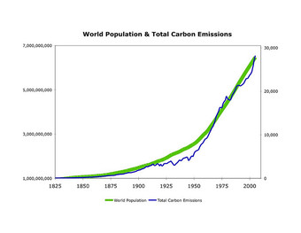{kind=link}
This graph shows a positive correlation between world population and total carbon emissions.
11.1.2. Scatter Diagram
A scatter diagram is a type of mathematical diagram using Cartesian coordinates to display values for two variables in a set of data.
Learning Objective
Demonstrate the role that scatter diagrams play in revealing correlation.
Key Points
- The controlled parameter, or independent variable, is customarily plotted along the horizontal axis, while the measured or dependent variable is customarily plotted along the vertical axis.
- If no dependent variable exists, either type of variable can be plotted on either axis, and a scatter plot will illustrate only the degree of correlation between two variables.
- A scatter plot shows the direction and strength of a relationship between the variables.
- You can determine the strength of the relationship by looking at the scatter plot and seeing how close the points are to a line.
- When you look at a scatterplot, you want to notice the overall pattern and any deviations from the pattern.
Key Terms
- Cartesian coordinate
- The coordinates of a point measured from an origin along a horizontal axis from left to right (the
$x$ -axis) and along a vertical axis from bottom to top (the$y$ -axis). - trend line
- A line on a graph, drawn through points that vary widely, that shows the general trend of a real-world function (often generated using linear regression).
Example
- To display values for "lung capacity" (first variable) and how long that person could hold his breath, a researcher would choose a group of people to study, then measure each one's lung capacity (first variable) and how long that person could hold his breath (second variable). The researcher would then plot the data in a scatter plot, assigning "lung capacity" to the horizontal axis, and "time holding breath" to the vertical axis. A person with a lung capacity of 400 ml who held his breath for 21.7 seconds would be represented by a single dot on the scatter plot at the point (400, 21.7) in the Cartesian coordinates. The scatter plot of all the people in the study would enable the researcher to obtain a visual comparison of the two variables in the data set, and will help to determine what kind of relationship there might be between the two variables.
A scatter plot, or diagram, is a type of mathematical diagram using Cartesian coordinates to display values for two variables in a set of data. The data is displayed as a collection of points, each having the value of one variable determining the position on the horizontal axis, and the value of the other variable determining the position on the vertical axis.
In the case of an experiment, a scatter plot is used when a variable exists that is below the control of the experimenter. The controlled parameter (or independent variable) is customarily plotted along the horizontal axis, while the measured (or dependent variable) is customarily plotted along the vertical axis. If no dependent variable exists, either type of variable can be plotted on either axis, and a scatter plot will illustrate only the degree of correlation (not causation) between two variables. This is the context in which we view scatter diagrams.
Relevance to Correlation
A scatter plot shows the direction and strength of a relationship between the variables. A clear direction happens given one of the following:
- High values of one variable occurring with high values of the other variable or low values of one variable occurring with low values of the other variable.
- High values of one variable occurring with low values of the other variable.
You can determine the strength of the relationship by looking at the scatter plot and seeing how close the points are to a line, a power function, an exponential function, or to some other type of function. When you look at a scatterplot, you want to notice the overall pattern and any deviations from the pattern. The following scatterplot examples illustrate these concepts .
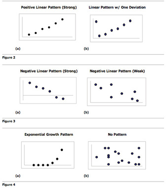{kind=link}
An illustration of the various patterns that scatter plots can visualize.
Trend Lines
To study the correlation between the variables, one can draw a line of best fit (known as a "trend line"). An equation for the correlation between the variables can be determined by established best-fit procedures. For a linear correlation, the best-fit procedure is known as linear regression and is guaranteed to generate a correct solution in a finite time. No universal best-fit procedure is guaranteed to generate a correct solution for arbitrary relationships.
Other Uses of Scatter Plots
A scatter plot is also useful to show how two comparable data sets agree with each other. In this case, an identity line (i.e., a $y=x$ line or $1:1$ line) is often drawn as a reference. The more the two data sets agree, the more the scatters tend to concentrate in the vicinity of the identity line. If the two data sets are numerically identical, the scatters fall on the identity line exactly.
One of the most powerful aspects of a scatter plot, however, is its ability to show nonlinear relationships between variables. Furthermore, if the data is represented by a mixed model of simple relationships, these relationships will be visually evident as superimposed patterns.
11.1.3. Coefficient of Correlation
The correlation coefficient is a measure of the linear dependence between two variables $X$ and $Y$ , giving a value between $+1$ and $-1$ .
Learning Objective
Compute Pearson's product-moment correlation coefficient.
Key Points
- The correlation coefficient was developed by Karl Pearson from a related idea introduced by Francis Galton in the 1880s.
- Pearson's correlation coefficient between two variables is defined as the covariance of the two variables divided by the product of their standard deviations.
- Pearson's correlation coefficient when applied to a sample is commonly represented by the letter $r$ .
- The size of the correlation $r$ indicates the strength of the linear relationship between $x$ and $y$ .
- Values of $r$ close to $-1$ or to $+1$ indicate a stronger linear relationship between $x$ and $y$ .
Key Terms
- covariance
- A measure of how much two random variables change together.
- correlation
- One of the several measures of the linear statistical relationship between two random variables, indicating both the strength and direction of the relationship.
The most common coefficient of correlation is known as the Pearson product-moment correlation coefficient, or Pearson's $r$ . It is a measure of the linear correlation (dependence) between two variables $X$ and $Y$ , giving a value between $+1$ and $-1$ . It is widely used in the sciences as a measure of the strength of linear dependence between two variables. It was developed by Karl Pearson from a related idea introduced by Francis Galton in the 1880s.
Pearson's correlation coefficient between two variables is defined as the covariance of the two variables divided by the product of their standard deviations. The form of the definition involves a "product moment", that is, the mean (the first moment about the origin) of the product of the mean-adjusted random variables; hence the modifier product-moment in the name.
Pearson's correlation coefficient when applied to a population is commonly represented by the Greek letter $\rho$ (rho) and may be referred to as the population correlation coefficient or the population Pearson correlation coefficient.
Pearson's correlation coefficient when applied to a sample is commonly represented by the letter $r$ and may be referred to as the sample correlation coefficient or the sample Pearson correlation coefficient. The formula for $r$ is as follows:
An equivalent expression gives the correlation coefficient as the mean of the products of the standard scores. Based on a sample of paired data $(X_i, Y_i)$ , the sample Pearson correlation coefficient is shown in:
Mathematical Properties
- The value of $r$ is always between $-1$ and $+1$ : $-1\leq r \leq 1$ .
- The size of the correlation $r$ indicates the strength of the linear relationship between $x$ and $y$ . Values of $r$ close to $-1$ or $+1$ indicate a stronger linear relationship between $x$ and $y$ .
- If $r=0$ there is absolutely no linear relationship between $x$ and $y$ (no linear correlation).
- A positive value of $r$ means that when $x$ increases, $y$ tends to increase and when $x$ decreases, $y$ tends to decrease (positive correlation).
- A negative value of $r$ means that when $x$ increases, $y$ tends to decrease and when $x$ decreases, $y$ tends to increase (negative correlation).
- If $r=1$ , there is perfect positive correlation. If $r=-1$ , there is perfect negative correlation. In both these cases, all of the original data points lie on a straight line. Of course, in the real world, this will not generally happen.
- The Pearson correlation coefficient is symmetric.
Another key mathematical property of the Pearson correlation coefficient is that it is invariant to separate changes in location and scale in the two variables. That is, we may transform $X$ to $a+bX$ and transform $Y$ to $c+dY$ , where $a$ , $b$ , $c$ , and $d$ are constants, without changing the correlation coefficient. This fact holds for both the population and sample Pearson correlation coefficients.
Example
Consider the following example data set of scores on a third exam and scores on a final exam:
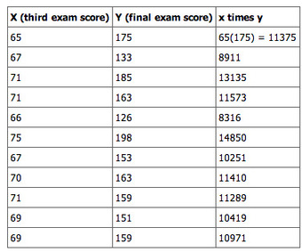{kind=link}
This table shows an example data set of scores on a third exam and scores on a final exam.
To find the correlation of this data we need the summary statistics; means, standard deviations, sample size, and the sum of the product of $x$ and $y$ .
To find ($xy$ ), multiply the $x$ and $y$ in each ordered pair together then sum these products. For this problem, $\sum xy = 125,500$ . To find the correlation coefficient we need the mean of $x$ , the mean of $y$ , the standard deviation of $x$ and the standard deviation of $y$ .
Put the summary statistics into the correlation coefficient formula and solve for $r$ , the correlation coefficient.
11.1.4. Coefficient of Determination
The coefficient of determination provides a measure of how well observed outcomes are replicated by a model.
Learning Objective
Interpret the properties of the coefficient of determination in regard to correlation.
Key Points
- The coefficient of determination, $r^2$ , is a statistic whose main purpose is either the prediction of future outcomes or the testing of hypotheses on the basis of other related information.
- The most general definition of the coefficient of determination is illustrated in, where $SS_\text{err}$ is the residual sum of squares and $SS_\text{tot}$ is the total sum of squares.
- $r^2$ , when expressed as a percent, represents the percent of variation in the dependent variable y that can be explained by variation in the independent variable $x$ using the regression (best fit) line.
- $1-r^2$ when expressed as a percent, represents the percent of variation in $y$ that is NOT explained by variation in $x$ using the regression line. This can be seen as the scattering of the observed data points about the regression line.
Key Terms
- regression
- An analytic method to measure the association of one or more independent variables with a dependent variable.
- correlation coefficient
- Any of the several measures indicating the strength and direction of a linear relationship between two random variables.
The coefficient of determination (denoted $r^2$ ) is a statistic used in the context of statistical models. Its main purpose is either the prediction of future outcomes or the testing of hypotheses on the basis of other related information. It provides a measure of how well observed outcomes are replicated by the model, as the proportion of total variation of outcomes explained by the model. Values for $r^2$ can be calculated for any type of predictive model, which need not have a statistical basis.
The Math
A data set will have observed values and modelled values, sometimes known as predicted values. The "variability" of the data set is measured through different sums of squares, such as:
- the total sum of squares (proportional to the sample variance);
- the regression sum of squares (also called the explained sum of squares); and
- the sum of squares of residuals, also called the residual sum of squares.
The most general definition of the coefficient of determination is:
$\displaystyle r^2 = 1-\frac{SS_\text{err}}{SS_\text{tot}}$
where $SS_\text{err}$ is the residual sum of squares and $SS_\text{tot}$ is the total sum of squares.
Properties and Interpretation of $r^2$
The coefficient of determination is actually the square of the correlation coefficient. It is is usually stated as a percent, rather than in decimal form. In context of data, $r^2$ can be interpreted as follows:
- $r^2$ , when expressed as a percent, represents the percent of variation in the dependent variable $y$ that can be explained by variation in the independent variable $x$ using the regression (best fit) line.
- $1-r^2$ when expressed as a percent, represents the percent of variation in $y$ that is NOT explained by variation in $x$ using the regression line. This can be seen as the scattering of the observed data points about the regression line.
So $r^2$ is a statistic that will give some information about the goodness of fit of a model. In regression, the $r^2$ coefficient of determination is a statistical measure of how well the regression line approximates the real data points. An $r^2$ of 1 indicates that the regression line perfectly fits the data.
In many (but not all) instances where $r^2$ is used, the predictors are calculated by ordinary least-squares regression: that is, by minimizing $SS_\text{err}$ . In this case, $r^2$ increases as we increase the number of variables in the model. This illustrates a drawback to one possible use of $r^2$ , where one might keep adding variables to increase the $r^2$ value. For example, if one is trying to predict the sales of a car model from the car's gas mileage, price, and engine power, one can include such irrelevant factors as the first letter of the model's name or the height of the lead engineer designing the car because the $r^2$ will never decrease as variables are added and will probably experience an increase due to chance alone. This leads to the alternative approach of looking at the adjusted $r^2$ . The explanation of this statistic is almost the same as $r^2$ but it penalizes the statistic as extra variables are included in the model.
Note that $r^2$ does not indicate whether:
- the independent variables are a cause of the changes in the dependent variable;
- omitted-variable bias exists;
- the correct regression was used;
- the most appropriate set of independent variables has been chosen;
- there is collinearity present in the data on the explanatory variables; or
- the model might be improved by using transformed versions of the existing set of independent variables.
Example
Consider the third exam/final exam example introduced in the previous section. The correlation coefficient is $r=0.6631$ . Therefore, the coefficient of determination is $r^2 = 0.6631^2 = 0.4397$ .
The interpretation of $r^2$ in the context of this example is as follows. Approximately 44% of the variation (0.4397 is approximately 0.44) in the final exam grades can be explained by the variation in the grades on the third exam. Therefore approximately 56% of the variation ($1-0.44=0.56$ ) in the final exam grades can NOT be explained by the variation in the grades on the third exam.
11.1.5. Line of Best Fit
The trend line (line of best fit) is a line that can be drawn on a scatter diagram representing a trend in the data.
Learning Objective
Illustrate the method of drawing a trend line and what it represents.
Key Points
- A trend line could simply be drawn by eye through a set of data points, but more properly its position and slope are calculated using statistical techniques like linear regression.
- Trend lines are often used to argue that a particular action or event (such as training, or an advertising campaign) caused observed changes at a point in time.
- The mathematical process which determines the unique line of best fit is based on what is called the method of least squares.
- The line of best fit is drawn by (1) having the same number of data points on each side of the line - i.e., the line is in the median position; and (2) NOT going from the first data to the last - since extreme data often deviate from the general trend and this will give a biased sense of direction.
Key Term
- trend
- the long-term movement in time series data after other components have been accounted for
The trend line, or line of best fit, is a line that can be drawn on a scatter diagram representing a trend in the data. It tells whether a particular data set has increased or decreased over a period of time. A trend line could simply be drawn by eye through a set of data points, but more properly its position and slope are calculated using statistical techniques like linear regression. Trend lines typically are straight lines, although some variations use higher degree polynomials depending on the degree of curvature desired in the line.
Trend lines are often used to argue that a particular action or event (such as training, or an advertising campaign) caused observed changes at a point in time. This is a simple technique, and does not require a control group, experimental design, or a sophisticated analysis technique. However, it suffers from a lack of scientific validity in cases where other potential changes can affect the data.
The mathematical process which determines the unique line of best fit is based on what is called the method of least squares - which explains why this line is sometimes called the least squares line. This method works by:
- finding the difference of each data $Y$ value from the line;
- squaring all the differences;
- summing all the squared differences;
- repeating this process for all positions of the line until the smallest sum of squared differences is reached.
Drawing a Trend Line
The line of best fit is drawn by:
- having the same number of data points on each side of the line - i.e., the line is in the median position;
- NOT going from the first data to the last data - since extreme data often deviate from the general trend and this will give a biased sense of direction.
The closeness (or otherwise) of the cloud of data points to the line suggests the concept of spread or dispersion.
The graph below shows what happens when we draw the line of best fit from the first data to the last data - it does not go through the median position as there is one data above and three data below the blue line. This is a common mistake to avoid.
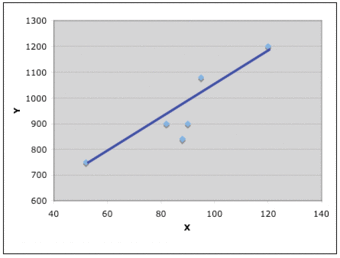{kind=link}
This graph shows what happens when we draw the line of best fit from the first data to the last data.
To determine the equation for the line of best fit:
- draw the scatterplot on a grid and draw the line of best fit;
- select two points on the line which are, as near as possible, on grid intersections so that you can accurately estimate their position;
- calculate the gradient ($B$ ) of the line using the formula: $\text{gradient}=\frac { \text{difference in vertical measures}}{\text{difference in horizontal measures}}$
- write the partial equation;
- substitute one of the chosen points into the partial equation to evaluate the "$A$ " term;
- write the full equation of the line.
Example
Consider the data in the graph below:
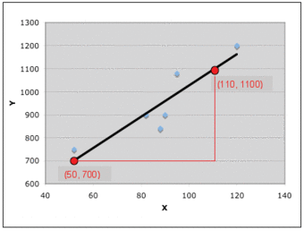{kind=link}
This graph will be used in our example for drawing a trend line.
To determine the equation for the line of best fit:
- a computer application has calculated and plotted the line of best fit for the data - it is shown as a black line - and it is in the median position with 3 data on one side and 3 data on the other side;
- the two points chosen on the line are $(50, 700)$ and $(110, 1100)$ ;
- calculate the gradient ($B$ ) of the line using the formula:
- the part equation:
- substitute the point $(50, 700)$ into the equation:
- write the full equation of the line:
11.1.6. Other Types of Correlation Coefficients
Other types of correlation coefficients include intraclass correlation and the concordance correlation coefficient.
Learning Objective
Distinguish the intraclass and concordance correlation coefficients from previously discussed correlation coefficients.
Key Points
- The intraclass correlation is a descriptive statistic that can be used when quantitative measurements are made on units that are organized into groups.
- It describes how strongly units in the same group resemble each other.
- The concordance correlation coefficient measures the agreement between two variables (e.g., to evaluate reproducibility or for inter-rater reliability).
- Whereas Pearson's correlation coefficient is immune to whether the biased or unbiased version for estimation of the variance is used, the concordance correlation coefficient is not.
Key Terms
- concordance
- Agreement, accordance, or consonance.
- random effect model
- A kind of hierarchical linear model assuming that the dataset being analyzed consists of a hierarchy of different populations whose differences relate to that hierarchy.
Intraclass Correlation
The intraclass correlation (or the intraclass correlation coefficient, abbreviated ICC) is a descriptive statistic that can be used when quantitative measurements are made on units that are organized into groups. It describes how strongly units in the same group resemble each other. While it is viewed as a type of correlation, unlike most other correlation measures it operates on data structured as groups rather than data structured as paired observations.
The intraclass correlation is commonly used to quantify the degree to which individuals with a fixed degree of relatedness (e.g., full siblings) resemble each other in terms of a quantitative trait. Another prominent application is the assessment of consistency or reproducibility of quantitative measurements made by different observers measuring the same quantity.
The intraclass correlation can be regarded within the framework of analysis of variance (ANOVA), and more recently it has been regarded in the framework of a random effect model. Most of the estimators can be defined in terms of the random effects model in:
where $Y_{ij}$ is the $i$ th observation in the $j$ th group, $\mu$ is an unobserved overall mean, $\alpha_j$ is an unobserved random effect shared by all values in group $j$ , and $\epsilon_{ij}$ is an unobserved noise term. For the model to be identified, the $\alpha_j$ and $\epsilon_{ij}$ are assumed to have expected value zero and to be uncorrelated with each other. Also, the $\alpha_j$ are assumed to be identically distributed, and the $\epsilon_{ij}$ are assumed to be identically distributed. The variance of $\alpha_j$ is denoted $\sigma_{\alpha}^2$ and the variance of $\epsilon_{ij}$ is denoted $\sigma_{\epsilon}^2$ . The population ICC in this framework is shown below:
Relationship to Pearson's Correlation Coefficient
One key difference between the two statistics is that in the ICC, the data are centered and scaled using a pooled mean and standard deviation; whereas in the Pearson correlation, each variable is centered and scaled by its own mean and standard deviation. This pooled scaling for the ICC makes sense because all measurements are of the same quantity (albeit on units in different groups). For example, in a paired data set where each "pair" is a single measurement made for each of two units (e.g., weighing each twin in a pair of identical twins) rather than two different measurements for a single unit (e.g., measuring height and weight for each individual), the ICC is a more natural measure of association than Pearson's correlation.
An important property of the Pearson correlation is that it is invariant to application of separate linear transformations to the two variables being compared. Thus, if we are correlating $X$ and $Y$ , where, say, $Y=2X+1$ , the Pearson correlation between $X$ and $Y$ is 1: a perfect correlation. This property does not make sense for the ICC, since there is no basis for deciding which transformation is applied to each value in a group. However if all the data in all groups are subjected to the same linear transformation, the ICC does not change.
Concordance Correlation Coefficient
The concordance correlation coefficient measures the agreement between two variables (e.g., to evaluate reproducibility or for inter-rater reliability). The formula is written as:
where ${ \mu }_{ x }$ and ${ \mu }_{ y }$ are the means for the two variables and ${ { \sigma }^{ 2 } }_{ x }$ and ${ { \sigma }^{ 2 } }_{ y }$ are the corresponding variances.
Relation to Other Measures of Correlation
Whereas Pearson's correlation coefficient is immune to whether the biased or unbiased version for estimation of the variance is used, the concordance correlation coefficient is not.
The concordance correlation coefficient is nearly identical to some of the measures called intraclass correlations. Comparisons of the concordance correlation coefficient with an "ordinary" intraclass correlation on different data sets will find only small differences between the two correlations.
11.1.7. Variation and Prediction Intervals
A prediction interval is an estimate of an interval in which future observations will fall with a certain probability given what has already been observed.
Learning Objective
Formulate a prediction interval and compare it to other types of statistical intervals.
Key Points
- A prediction interval bears the same relationship to a future observation that a frequentist confidence interval or Bayesian credible interval bears to an unobservable population parameter.
- In Bayesian terms, a prediction interval can be described as a credible interval for the variable itself, rather than for a parameter of the distribution thereof.
- The concept of prediction intervals need not be restricted to the inference of just a single future sample value but can be extended to more complicated cases.
- Since prediction intervals are only concerned with past and future observations, rather than unobservable population parameters, they are advocated as a better method than confidence intervals by some statisticians.
Key Terms
- confidence interval
- A type of interval estimate of a population parameter used to indicate the reliability of an estimate.
- credible interval
- An interval in the domain of a posterior probability distribution used for interval estimation.
In predictive inference, a prediction interval is an estimate of an interval in which future observations will fall, with a certain probability, given what has already been observed. A prediction interval bears the same relationship to a future observation that a frequentist confidence interval or Bayesian credible interval bears to an unobservable population parameter. Prediction intervals predict the distribution of individual future points, whereas confidence intervals and credible intervals of parameters predict the distribution of estimates of the true population mean or other quantity of interest that cannot be observed. Prediction intervals are also present in forecasts; however, some experts have shown that it is difficult to estimate the prediction intervals of forecasts that have contrary series. Prediction intervals are often used in regression analysis.
For example, let's say one makes the parametric assumption that the underlying distribution is a normal distribution and has a sample set $\{X_1, \dots, X_n\}$ . Then, confidence intervals and credible intervals may be used to estimate the population mean $\mu$ and population standard deviation $\sigma$ of the underlying population, while prediction intervals may be used to estimate the value of the next sample variable, $X_{n+1}$ .
Alternatively, in Bayesian terms, a prediction interval can be described as a credible interval for the variable itself, rather than for a parameter of the distribution thereof.
The concept of prediction intervals need not be restricted to the inference of just a single future sample value but can be extended to more complicated cases. For example, in the context of river flooding, where analyses are often based on annual values of the largest flow within the year, there may be interest in making inferences about the largest flood likely to be experienced within the next 50 years.
Since prediction intervals are only concerned with past and future observations, rather than unobservable population parameters, they are advocated as a better method than confidence intervals by some statisticians.
Prediction Intervals in the Normal Distribution
Given a sample from a normal distribution, whose parameters are unknown, it is possible to give prediction intervals in the frequentist sense -- i.e., an interval $[a, b]$ based on statistics of the sample such that on repeated experiments, $X_{n+1}$ falls in the interval the desired percentage of the time.
A general technique of frequentist prediction intervals is to find and compute a pivotal quantity of the observables $X_1, \dots, X_n, X_{n+1}$ – meaning a function of observables and parameters whose probability distribution does not depend on the parameters – that can be inverted to give a probability of the future observation $X_{n+1}$ falling in some interval computed in terms of the observed values so far. The usual method of constructing pivotal quantities is to take the difference of two variables that depend on location, so that location cancels out, and then take the ratio of two variables that depend on scale, so that scale cancels out. The most familiar pivotal quantity is the Student's $t$ -statistic, which can be derived by this method.
A prediction interval $[l, u]$ for a future observation $X$ in a normal distribution $N(\mu, \sigma^2)$ with known mean and variance may easily be calculated from the formula:
$\displaystyle \begin{align} \gamma&=P(l< X< u) \\ &=P\left(\frac{l-\mu}{\sigma}< \frac{X-\mu}{\sigma}< \frac{u-\mu}{\sigma}\right)\\& =P\left(\frac{l-\mu}{\sigma}< Z< \frac{u-\mu}{\sigma}\right) \end{align}$
where:
the standard score of X, is standard normal distributed. The prediction interval is conventionally written as:
For example, to calculate the 95% prediction interval for a normal distribution with a mean ($\mu$ ) of 5 and a standard deviation ($\sigma$ ) of 1, then $z$ is approximately 2. Therefore, the lower limit of the prediction interval is approximately $5 - (1\cdot2) = 3$ , and the upper limit is approximately 7, thus giving a prediction interval of approximately 3 to 7.

Prediction interval (on the $y$ -axis) given from $z$ (the quantile of the standard score, on the $x$ -axis). The $y$ -axis is logarithmically compressed (but the values on it are not modified).
11.1.8. Rank Correlation
A rank correlation is a statistic used to measure the relationship between rankings of ordinal variables or different rankings of the same variable.
Learning Objective
Define rank correlation and illustrate how it differs from linear correlation.
Key Points
- A rank correlation coefficient measures the degree of similarity between two rankings and can be used to assess the significance of the relation between them.
- If one the variable decreases as the other increases, the rank correlation coefficients will be negative.
- An increasing rank correlation coefficient implies increasing agreement between rankings.
Key Terms
- Spearman's rank correlation coefficient
- A nonparametric measure of statistical dependence between two variables that assesses how well the relationship between two variables can be described using a monotonic function.
- rank correlation coefficient
- A measure of the degree of similarity between two rankings that can be used to assess the significance of the relation between them.
- Kendall's rank correlation coefficient
- A statistic used to measure the association between two measured quantities; specifically, it measures the similarity of the orderings of the data when ranked by each of the quantities.
A rank correlation is any of several statistics that measure the relationship between rankings of different ordinal variables or different rankings of the same variable. In this context, a "ranking" is the assignment of the labels "first", "second", "third", et cetera, to different observations of a particular variable. A rank correlation coefficient measures the degree of similarity between two rankings and can be used to assess the significance of the relation between them.
If, for example, one variable is the identity of a college basketball program and another variable is the identity of a college football program, one could test for a relationship between the poll rankings of the two types of program. One could then ask, do colleges with a higher-ranked basketball program tend to have a higher-ranked football program? A rank correlation coefficient can measure that relationship, and the measure of significance of the rank correlation coefficient can show whether the measured relationship is small enough to be likely to be a coincidence.
If there is only one variable—for example, the identity of a college football program—but it is subject to two different poll rankings (say, one by coaches and one by sportswriters), then the similarity of the two different polls' rankings can be measured with a rank correlation coefficient.
Rank Correlation Coefficients
Rank correlation coefficients, such as Spearman's rank correlation coefficient and Kendall's rank correlation coefficient, measure the extent to which as one variable increases the other variable tends to increase, without requiring that increase to be represented by a linear relationship .
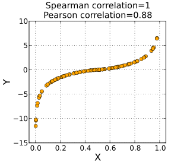{kind=link}
This graph shows a Spearman rank correlation of 1 and a Pearson correlation coefficient of 0.88. A Spearman correlation of 1 results when the two variables being compared are monotonically related, even if their relationship is not linear. In contrast, this does not give a perfect Pearson correlation.
If as the one variable increases the other decreases, the rank correlation coefficients will be negative. It is common to regard these rank correlation coefficients as alternatives to Pearson's coefficient, used either to reduce the amount of calculation or to make the coefficient less sensitive to non-normality in distributions. However, this view has little mathematical basis, as rank correlation coefficients measure a different type of relationship than the Pearson product-moment correlation coefficient. They are best seen as measures of a different type of association rather than as alternative measure of the population correlation coefficient.
An increasing rank correlation coefficient implies increasing agreement between rankings. The coefficient is inside the interval $[-1, 1]$ and assumes the value:
- $-1$ if the disagreement between the two rankings is perfect: one ranking is the reverse of the other;
- 0 if the rankings are completely independent; or
- 1 if the agreement between the two rankings is perfect: the two rankings are the same.
Nature of Rank Correlation
To illustrate the nature of rank correlation, and its difference from linear correlation, consider the following four pairs of numbers $(x, y)$ :
As we go from each pair to the next pair, $x$ increases, and so does $y$ . This relationship is perfect, in the sense that an increase in $x$ is always accompanied by an increase in $y$ . This means that we have a perfect rank correlation and both Spearman's correlation coefficient and Kendall's correlation coefficient are 1. In this example, the Pearson product-moment correlation coefficient is 0.7544, indicating that the points are far from lying on a straight line.
In the same way, if $y$ always decreases when $x$ increases, the rank correlation coefficients will be $-1$ while the Pearson product-moment correlation coefficient may or may not be close to $-1$ . This depends on how close the points are to a straight line. However, in the extreme case of perfect rank correlation, when the two coefficients are both equal (being both $+1$ or both $-1$ ), this is not in general so, and values of the two coefficients cannot meaningfully be compared. For example, for the three pairs $(1, 1)$ , $(2, 3)$ , $(3, 2)$ , Spearman's coefficient is $\frac{1}{2}$ , while Kendall's coefficient is $\frac{1}{3}$ .
11.2. More About Correlation
11.2.1. Ecological Fallacy
An ecological fallacy is an interpretation of statistical data where inferences about individuals are deduced from inferences about the group as a whole.
Learning Objective
Discuss ecological fallacy in terms of aggregate versus individual inference and give specific examples of its occurrence.
Key Points
- Ecological fallacy can refer to the following fallacy: the average for a group is approximated by the average in the total population divided by the group size.
- A striking ecological fallacy is Simpson's paradox.
- Another example of ecological fallacy is when the average of a population is assumed to have an interpretation in terms of likelihood at the individual level.
- Aggregate regressions lose individual level data but individual regressions add strong modeling assumptions.
Key Terms
- Simpson's paradox
- That the association of two variables for one subset of a population may be similar to the association of those variables in another subset, but different from the association of the variables in the total population.
- ecological correlation
- A correlation between two variables that are group parameters, in contrast to a correlation between two variables that describe individuals.
Confusion Between Groups and Individuals
Ecological fallacy can refer to the following statistical fallacy: the correlation between individual variables is deduced from the correlation of the variables collected for the group to which those individuals belong. As an example, assume that at the individual level, being Protestant impacts negatively one's tendency to commit suicide, but the probability that one's neighbor commits suicide increases one's tendency to become Protestant. Then, even if at the individual level there is negative correlation between suicidal tendencies and Protestantism, there can be a positive correlation at the aggregate level.
Choosing Between Aggregate and Individual Inference
Running regressions on aggregate data is not unacceptable if one is interested in the aggregate model. For instance, as a governor, it is correct to make inferences about the effect the size of a police force would have on the crime rate at the state level, if one is interested in the policy implication of a rise in police force. However, an ecological fallacy would happen if a city council deduces the impact of an increase in the police force on the crime rate at the city level from the correlation at the state level.
Choosing to run aggregate or individual regressions to understand aggregate impacts on some policy depends on the following trade off: aggregate regressions lose individual level data but individual regressions add strong modeling assumptions.
Some researchers suggest that the ecological correlation gives a better picture of the outcome of public policy actions, thus they recommend the ecological correlation over the individual level correlation for this purpose. Other researchers disagree, especially when the relationships among the levels are not clearly modeled. To prevent ecological fallacy, researchers with no individual data can model first what is occurring at the individual level, then model how the individual and group levels are related, and finally examine whether anything occurring at the group level adds to the understanding of the relationship.
Groups and Total Averages
Ecological fallacy can also refer to the following fallacy: the average for a group is approximated by the average in the total population divided by the group size. Suppose one knows the number of Protestants and the suicide rate in the USA, but one does not have data linking religion and suicide at the individual level. If one is interested in the suicide rate of Protestants, it is a mistake to estimate it by the total suicide rate divided by the number of Protestants.
Simpson's Paradox
A striking ecological fallacy is Simpson's paradox, diagramed in . Simpson's paradox refers to the fact, when comparing two populations divided in groups of different sizes, the average of some variable in the first population can be higher in every group and yet lower in the total population.
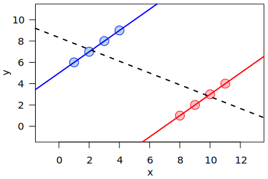{kind=link}
Simpson's paradox for continuous data: a positive trend appears for two separate groups (blue and red), a negative trend (black, dashed) appears when the data are combined.
Mean and Median
A third example of ecological fallacy is when the average of a population is assumed to have an interpretation in terms of likelihood at the individual level.
For instance, if the average score of group A is larger than zero, it does not mean that a random individual of group A is more likely to have a positive score. Similarly, if a particular group of people is measured to have a lower average IQ than the general population, it is an error to conclude that a randomly selected member of the group is more likely to have a lower IQ than the average general population. Mathematically, this comes from the fact that a distribution can have a positive mean but a negative median. This property is linked to the skewness of the distribution.
Consider the following numerical example:
Group A: 80% of people got 40 points and 20% of them got 95 points. The average score is 51 points.
Group B: 50% of people got 45 points and 50% got 55 points. The average score is 50 points.
If we pick two people at random from A and B, there are 4 possible outcomes:
- A - 40, B - 45 (B wins, 40% probability)
- A - 40, B - 55 (B wins, 40% probability)
- A - 95, B - 45 (A wins, 10% probability)
- A - 95, B - 55 (A wins, 10% probability)
Although Group A has a higher average score, 80% of the time a random individual of A will score lower than a random individual of B.
11.2.2. Correlation is Not Causation
The conventional dictum "correlation does not imply causation" means that correlation cannot be used to infer a causal relationship between variables.
Learning Objective
Recognize that although correlation can indicate the existence of a causal relationship, it is not a sufficient condition to definitively establish such a relationship
Key Points
- The assumption that correlation proves causation is considered a questionable cause logical fallacy, in that two events occurring together are taken to have a cause-and-effect relationship.
- As with any logical fallacy, identifying that the reasoning behind an argument is flawed does not imply that the resulting conclusion is false.
- In the cum hoc ergo propter hoc logical fallacy, one makes a premature conclusion about causality after observing only a correlation between two or more factors.
Key Terms
- convergent cross mapping
- A statistical test that (like the Granger Causality test) tests whether one variable predicts another; unlike most other tests that establish a coefficient of correlation, but not a cause-and-effect relationship.
- Granger causality test
- A statistical hypothesis test for determining whether one time series is useful in forecasting another.
- tautology
- A statement that is true for all values of its variables.
The conventional dictum that "correlation does not imply causation" means that correlation cannot be used to infer a causal relationship between the variables. This dictum does not imply that correlations cannot indicate the potential existence of causal relations. However, the causes underlying the correlation, if any, may be indirect and unknown, and high correlations also overlap with identity relations (tautology) where no causal process exists. Consequently, establishing a correlation between two variables is not a sufficient condition to establish a causal relationship (in either direction). Many statistical tests calculate correlation between variables. A few go further and calculate the likelihood of a true causal relationship. Examples include the Granger causality test and convergent cross mapping.
The assumption that correlation proves causation is considered a "questionable cause logical fallacy," in that two events occurring together are taken to have a cause-and-effect relationship. This fallacy is also known as cum hoc ergo propter hoc, Latin for "with this, therefore because of this," and "false cause. " Consider the following:
In a widely studied example, numerous epidemiological studies showed that women who were taking combined hormone replacement therapy (HRT) also had a lower-than-average incidence of coronary heart disease (CHD), leading doctors to propose that HRT was protective against CHD. But randomized controlled trials showed that HRT caused a small but statistically significant increase in risk of CHD. Re-analysis of the data from the epidemiological studies showed that women undertaking HRT were more likely to be from higher socio-economic groups with better-than-average diet and exercise regimens. The use of HRT and decreased incidence of coronary heart disease were coincident effects of a common cause (i.e. the benefits associated with a higher socioeconomic status), rather than cause and effect, as had been supposed.
As with any logical fallacy, identifying that the reasoning behind an argument is flawed does not imply that the resulting conclusion is false. In the instance above, if the trials had found that hormone replacement therapy caused a decrease in coronary heart disease, but not to the degree suggested by the epidemiological studies, the assumption of causality would have been correct, although the logic behind the assumption would still have been flawed.
General Pattern
For any two correlated events A and B, the following relationships are possible:
- A causes B;
- B causes A;
- A and B are consequences of a common cause, but do not cause each other;
- There is no connection between A and B; the correlation is coincidental.
Less clear-cut correlations are also possible. For example, causality is not necessarily one-way; in a predator-prey relationship, predator numbers affect prey, but prey numbers (e.g., food supply) also affect predators.
The cum hoc ergo propter hoc logical fallacy can be expressed as follows:
- A occurs in correlation with B.
- Therefore, A causes B.
In this type of logical fallacy, one makes a premature conclusion about causality after observing only a correlation between two or more factors. Generally, if one factor (A) is observed to only be correlated with another factor (B), it is sometimes taken for granted that A is causing B, even when no evidence supports it. This is a logical fallacy because there are at least five possibilities:
- A may be the cause of B.
- B may be the cause of A.
- Some unknown third factor C may actually be the cause of both A and B.
- There may be a combination of the above three relationships. For example, B may be the cause of A at the same time as A is the cause of B (contradicting that the only relationship between A and B is that A causes B). This describes a self-reinforcing system.
- The "relationship" is a coincidence or so complex or indirect that it is more effectively called a coincidence (i.e., two events occurring at the same time that have no direct relationship to each other besides the fact that they are occurring at the same time). A larger sample size helps to reduce the chance of a coincidence, unless there is a systematic error in the experiment.
In other words, there can be no conclusion made regarding the existence or the direction of a cause and effect relationship only from the fact that A and B are correlated. Determining whether there is an actual cause and effect relationship requires further investigation, even when the relationship between A and B is statistically significant, a large effect size is observed, or a large part of the variance is explained.
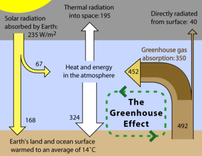{kind=link}
The greenhouse effect is a well-known cause-and-effect relationship. While well-established, this relationship is still susceptible to logical fallacy due to the complexity of the system.
11.3. Regression
11.3.1. Predictions and Probabilistic Models
Regression models are often used to predict a response variable $y$ from an explanatory variable $x$ .
Learning Objective
Explain how to estimate the relationship among variables using regression analysis
Key Points
- Regression models predict a value of the $Y$ variable, given known values of the $X$ variables. Prediction within the range of values in the data set used for model-fitting is known informally as interpolation.
- Prediction outside this range of the data is known as extrapolation. The further the extrapolation goes outside the data, the more room there is for the model to fail due to differences between the assumptions and the sample data or the true values.
- There are certain necessary conditions for regression inference: observations must be independent, the mean response has a straight-line relationship with $x$ , the standard deviation of $y$ is the same for all values of $x$ , and the response $y$ varies according to a normal distribution.
Key Terms
- interpolation
- the process of estimating the value of a function at a point from its values at nearby points
- extrapolation
- a calculation of an estimate of the value of some function outside the range of known values
Regression Analysis
In statistics, regression analysis is a statistical technique for estimating the relationships among variables. It includes many techniques for modeling and analyzing several variables when the focus is on the relationship between a dependent variable and one or more independent variables. More specifically, regression analysis helps one understand how the typical value of the dependent variable changes when any one of the independent variables is varied, while the other independent variables are held fixed. Most commonly, regression analysis estimates the conditional expectation of the dependent variable given the independent variables – that is, the average value of the dependent variable when the independent variables are fixed. Less commonly, the focus is on a quantile, or other location parameter of the conditional distribution of the dependent variable given the independent variables. In all cases, the estimation target is a function of the independent variables, called the regression function. In regression analysis, it is also of interest to characterize the variation of the dependent variable around the regression function, which can be described by a probability distribution.
Regression analysis is widely used for prediction and forecasting. Regression analysis is also used to understand which among the independent variables is related to the dependent variable, and to explore the forms of these relationships. In restricted circumstances, regression analysis can be used to infer causal relationships between the independent and dependent variables. However this can lead to illusions or false relationships, so caution is advisable; for example, correlation does not imply causation.
Making Predictions Using Regression Inference
Regression models predict a value of the $Y$ variable, given known values of the $X$ variables. Prediction within the range of values in the data set used for model-fitting is known informally as interpolation. Prediction outside this range of the data is known as extrapolation. Performing extrapolation relies strongly on the regression assumptions. The further the extrapolation goes outside the data, the more room there is for the model to fail due to differences between the assumptions and the sample data or the true values.
It is generally advised that when performing extrapolation, one should accompany the estimated value of the dependent variable with a prediction interval that represents the uncertainty. Such intervals tend to expand rapidly as the values of the independent variable(s) move outside the range covered by the observed data.
However, this does not cover the full set of modelling errors that may be being made--in particular, the assumption of a particular form for the relation between $Y$ and $X$ . A properly conducted regression analysis will include an assessment of how well the assumed form is matched by the observed data, but it can only do so within the range of values of the independent variables actually available. This means that any extrapolation is particularly reliant on the assumptions being made about the structural form of the regression relationship. Best-practice advice here is that a linear-in-variables and linear-in-parameters relationship should not be chosen simply for computational convenience, but that all available knowledge should be deployed in constructing a regression model. If this knowledge includes the fact that the dependent variable cannot go outside a certain range of values, this can be made use of in selecting the model – even if the observed data set has no values particularly near such bounds. The implications of this step of choosing an appropriate functional form for the regression can be great when extrapolation is considered. At a minimum, it can ensure that any extrapolation arising from a fitted model is "realistic" (or in accord with what is known).
Conditions for Regression Inference
A scatterplot shows a linear relationship between a quantitative explanatory variable $x$ and a quantitative response variable $y$ . Let's say we have $n$ observations on an explanatory variable $x$ and a response variable $y$ . Our goal is to study or predict the behavior of $y$ for given values of $x$ . Here are the required conditions for the regression model:
- Repeated responses $y$ are independent of each other.
- The mean response $\mu_y$ has a straight-line (i.e., "linear") relationship with $x$ : $\mu_y = \alpha + \beta x$ ; the slope $\beta$ and intercept $\alpha$ are unknown parameters.
- The standard deviation of $y$ (call it $\sigma$ ) is the same for all values of $x$ . The value of $\sigma$ is unknown.
- For any fixed value of $x$ , the response $y$ varies according to a normal distribution.
{kind=link}
A good rule of thumb when using the linear regression method is to look at the scatter plot of the data. This graph is a visual example of why it is important that the data have a linear relationship. Each of these four data sets has the same linear regression line and therefore the same correlation, 0.816. This number may at first seem like a strong correlation—but in reality the four data distributions are very different: the same predictions that might be true for the first data set would likely not be true for the second, even though the regression method would lead you to believe that they were more or less the same. Looking at panels 2, 3, and 4, you can see that a straight line is probably not the best way to represent these three data sets.
11.3.2. A Graph of Averages
A graph of averages and the least-square regression line are both good ways to summarize the data in a scatterplot.
Learning Objective
Contrast linear regression and graph of averages
Key Points
- In most cases, a line will not pass through all points in the data. A good line of regression makes the distances from the points to the line as small as possible. The most common method of doing this is called the "least-squares" method.
- Sometimes, a graph of averages is used to show a pattern between the $y$ and $x$ variables. In a graph of averages, the $x$ -axis is divided up into intervals. The averages of the $y$ values in those intervals are plotted against the midpoints of the intervals.
- The graph of averages plots a typical $y$ value in each interval: some of the points fall above the least-squares regression line, and some of the points fall below that line.
Key Terms
- interpolation
- the process of estimating the value of a function at a point from its values at nearby points
- extrapolation
- a calculation of an estimate of the value of some function outside the range of known values
- graph of averages
- a plot of the average values of one variable (say
$y$ ) for small ranges of values of the other variable (say$x$ ), against the value of the second variable ($x$ ) at the midpoints of the ranges
Linear Regression vs. Graph of Averages
Linear (straight-line) relationships between two quantitative variables are very common in statistics. Often, when we have a scatterplot that shows a linear relationship, we'd like to summarize the overall pattern and make predictions about the data. This can be done by drawing a line through the scatterplot. The regression line drawn through the points describes how the dependent variable $y$ changes with the independent variable $x$ . The line is a model that can be used to make predictions, whether it is interpolation or extrapolation. The regression line has the form $y=a+bx$ , where $y$ is the dependent variable, $x$ is the independent variable, $b$ is the slope (the amount by which $y$ changes when $x$ increases by one), and $a$ is the $y$ -intercept (the value of $y$ when $x=0$ ).
In most cases, a line will not pass through all points in the data. A good line of regression makes the distances from the points to the line as small as possible. The most common method of doing this is called the "least-squares" method. The least-squares regression line is of the form $\hat{y} = a+bx$ , with slope $b = \frac{rs_y}{s_x}$ ($r$ is the correlation coefficient, $s_y$ and $s_x$ are the standard deviations of $y$ and $x$ ). This line passes through the point $(\bar{x},\bar{y})$ (the means of $x$ and $y$ ).
Sometimes, a graph of averages is used to show a pattern between the $y$ and $x$ variables. In a graph of averages, the $x$ -axis is divided up into intervals. The averages of the $y$ values in those intervals are plotted against the midpoints of the intervals. If we needed to summarize the $y$ values whose $x$ values fall in a certain interval, the point plotted on the graph of averages would be good to use.
The points on a graph of averages do not usually line up in a straight line, making it different from the least-squares regression line. The graph of averages plots a typical $y$ value in each interval: some of the points fall above the least-squares regression line, and some of the points fall below that line.

Random data points and their linear regression.
11.3.3. The Regression Method
The regression method utilizes the average from known data to make predictions about new data.
Learning Objective
Contrast interpolation and extrapolation to predict data
Key Points
- If we know no information about the $x$ -value, it is best to make predictions about the $y$ -value using the average of the entire data set.
- If we know the independent variable, or $x$ -value, the best prediction of the dependent variable, or $y$ -value, is the average of all the $y$ -values for that specific $x$ -value.
- Generalizations and predictions are often made using the methods of interpolation and extrapolation.
Key Terms
- extrapolation
- a calculation of an estimate of the value of some function outside the range of known values
- interpolation
- the process of estimating the value of a function at a point from its values at nearby points
The Regression Method
The best way to understand the regression method is to use an example. Let's say we have some data about students' Math SAT scores and their freshman year GPAs in college. The average SAT score is 560, with a standard deviation of 75. The average first year GPA is 2.8, with a standard deviation of 0.5. Now, we choose a student at random and wish to predict his first year GPA. With no other information given, it is best to predict using the average. We predict his GPA is 2.8
Now, let's say we pick another student. However, this time we know her Math SAT score was 680, which is significantly higher than the average. Instead of just predicting 2.8, this time we look at the graph of averages and predict her GPA is whatever the average is of all the students in our sample who also scored a 680 on the SAT. This is likely to be higher than 2.8.
To generalize the regression method:
- If you know no information (you don't know the SAT score), it is best to make predictions using the average.
- If you know the independent variable, or $x$ -value (you know the SAT score), the best prediction of the dependent variable, or $y$ -value (in this case, the GPA), is the average of all the $y$ -values for that specific $x$ -value.
Generalization
In the example above, the college only has experience with students that have been admitted; however, it could also use the regression model for students that have not been admitted. There are some problems with this type of generalization. If the students admitted all had SAT scores within the range of 480 to 780, the regression model may not be a very good estimate for a student who only scored a 350 on the SAT.
Despite this issue, generalization is used quite often in statistics. Sometimes statisticians will use interpolation to predict data points within the range of known data points. For example, if no one before had received an exact SAT score of 650, we would predict his GPA by looking at the GPAs of those who scored 640 and 660 on the SAT.
Extrapolation is also frequently used, in which data points beyond the known range of values is predicted. Let's say the highest SAT score of a student the college admitted was 780. What if we have a student with an SAT score of 800, and we want to predict her GPA? We can do this by extending the regression line. This may or may not be accurate, depending on the subject matter.

An example of extrapolation, where data outside the known range of values is predicted. The red points are assumed known and the extrapolation problem consists of giving a meaningful value to the blue box at $x=7$ .
11.3.4. The Regression Fallacy
The regression fallacy fails to account for natural fluctuations and rather ascribes cause where none exists.
Learning Objective
Illustrate examples of regression fallacy
Key Points
- Things such as golf scores, the earth's temperature, and chronic back pain fluctuate naturally and usually regress towards the mean. The logical flaw is to make predictions that expect exceptional results to continue as if they were average.
- People are most likely to take action when variance is at its peak. Then, after results become more normal, they believe that their action was the cause of the change, when in fact, it was not causal.
- In essence, misapplication of regression to the mean can reduce all events to a "just so" story, without cause or effect. Such misapplication takes as a premise that all events are random, as they must be for the concept of regression to the mean to be validly applied.
Key Terms
- regression fallacy
- flawed logic that ascribes cause where none exists
- post hoc fallacy
- flawed logic that assumes just because A occurred before B, then A must have caused B to happen
What is the Regression Fallacy?
The regression (or regressive) fallacy is an informal fallacy. It ascribes cause where none exists. The flaw is failing to account for natural fluctuations. It is frequently a special kind of the post hoc fallacy.
Things such as golf scores, the earth's temperature, and chronic back pain fluctuate naturally and usually regress towards the mean. The logical flaw is to make predictions that expect exceptional results to continue as if they were average. People are most likely to take action when variance is at its peak. Then, after results become more normal, they believe that their action was the cause of the change, when in fact, it was not causal.
This use of the word "regression" was coined by Sir Francis Galton in a study from 1885 called "Regression Toward Mediocrity in Hereditary Stature. " He showed that the height of children from very short or very tall parents would move towards the average. In fact, in any situation where two variables are less than perfectly correlated, an exceptional score on one variable may not be matched by an equally exceptional score on the other variable. The imperfect correlation between parents and children (height is not entirely heritable) means that the distribution of heights of their children will be centered somewhere between the average of the parents and the average of the population as whole. Thus, any single child can be more extreme than the parents, but the odds are against it.
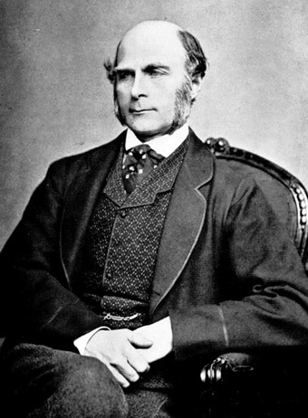{kind=link}
A picture of Sir Francis Galton, who coined the use of the word "regression. "
Examples of the Regression Fallacy
- When his pain got worse, he went to a doctor, after which the pain subsided a little. Therefore, he benefited from the doctor's treatment.The pain subsiding a little after it has gotten worse is more easily explained by regression towards the mean. Assuming the pain relief was caused by the doctor is fallacious.
- The student did exceptionally poorly last semester, so I punished him. He did much better this semester. Clearly, punishment is effective in improving students' grades. Often, exceptional performances are followed by more normal performances, so the change in performance might better be explained by regression towards the mean. Incidentally, some experiments have shown that people may develop a systematic bias for punishment and against reward because of reasoning analogous to this example of the regression fallacy.
- The frequency of accidents on a road fell after a speed camera was installed. Therefore, the speed camera has improved road safety. Speed cameras are often installed after a road incurs an exceptionally high number of accidents, and this value usually falls (regression to mean) immediately afterwards. Many speed camera proponents attribute this fall in accidents to the speed camera, without observing the overall trend.
- Some authors have claimed that the alleged "Sports Illustrated Cover Jinx" is a good example of a regression effect: extremely good performances are likely to be followed by less extreme ones, and athletes are chosen to appear on the cover of Sports Illustrated only after extreme performances. Assuming athletic careers are partly based on random factors, attributing this to a "jinx" rather than regression, as some athletes reportedly believed, would be an example of committing the regression fallacy.
Misapplication of the Regression Fallacy
On the other hand, dismissing valid explanations can lead to a worse situation. For example: After the Western Allies invaded Normandy, creating a second major front, German control of Europe waned. Clearly, the combination of the Western Allies and the USSR drove the Germans back.
The conclusion above is true, but what if instead we came to a fallacious evaluation: "Given that the counterattacks against Germany occurred only after they had conquered the greatest amount of territory under their control, regression to the mean can explain the retreat of German forces from occupied territories as a purely random fluctuation that would have happened without any intervention on the part of the USSR or the Western Allies." This is clearly not the case. The reason is that political power and occupation of territories is not primarily determined by random events, making the concept of regression to the mean inapplicable (on the large scale).
In essence, misapplication of regression to the mean can reduce all events to a "just so" story, without cause or effect. Such misapplication takes as a premise that all events are random, as they must be for the concept of regression to the mean to be validly applied.
11.4. The Regression Line
11.4.1. Slope and Intercept
In the regression line equation the constant $m$ is the slope of the line and $b$ is the $y$ -intercept.
Learning Objective
Model the relationship between variables in regression analysis
Key Points
- Linear regression is an approach to modeling the relationship between a dependent variable $y$ and 1 or more independent variables denoted $X$ .
- The mathematical function of the regression line is expressed in terms of a number of parameters, which are the coefficients of the equation, and the values of the independent variable.
- The coefficients are numeric constants by which variable values in the equation are multiplied or which are added to a variable value to determine the unknown.
- In the regression line equation, $x$ and $y$ are the variables of interest in our data, with $y$ the unknown or dependent variable and $x$ the known or independent variable.
Key Terms
- slope
- the ratio of the vertical and horizontal distances between two points on a line; zero if the line is horizontal, undefined if it is vertical.
- intercept
- the coordinate of the point at which a curve intersects an axis
Regression Analysis
Regression analysis is the process of building a model of the relationship between variables in the form of mathematical equations. The general purpose is to explain how one variable, the dependent variable, is systematically related to the values of one or more independent variables. An independent variable is so called because we imagine its value varying freely across its range, while the dependent variable is dependent upon the values taken by the independent. The mathematical function is expressed in terms of a number of parameters that are the coefficients of the equation, and the values of the independent variable. The coefficients are numeric constants by which variable values in the equation are multiplied or which are added to a variable value to determine the unknown. A simple example is the equation for the regression line which follows:
Here, by convention, $x$ and $y$ are the variables of interest in our data, with $y$ the unknown or dependent variable and $x$ the known or independent variable. The constant $$$m$ is slope of the line and $b$ is the $y$ -intercept -- the value where the line cross the $y$ axis. So, $m$ and $b$ are the coefficients of the equation.
Linear regression is an approach to modeling the relationship between a scalar dependent variable $y$ and one or more explanatory (independent) variables denoted $X$ . The case of one explanatory variable is called simple linear regression. For more than one explanatory variable, it is called multiple linear regression. (This term should be distinguished from multivariate linear regression, where multiple correlated dependent variables are predicted, rather than a single scalar variable).
11.4.2. Two Regression Lines
ANCOVA can be used to compare regression lines by testing the effect of a categorial value on a dependent variable, controlling the continuous covariate.
Learning Objective
Assess ANCOVA for analysis of covariance
Key Points
- Researchers, such as those working in the field of biology, commonly wish to compare regressions and determine causal relationships between two variables.
- Covariance is a measure of how much two variables change together and how strong the relationship is between them.
- ANCOVA evaluates whether population means of a dependent variable (DV) are equal across levels of a categorical independent variable (IV), while statistically controlling for the effects of other continuous variables that are not of primary interest, known as covariates (CV).
- ANCOVA can also be used to increase statistical power or adjust preexisting differences.
- It is also possible to see similar slopes between lines but a different intercept, which can be interpreted as a difference in magnitudes but not in the rate of change.
Key Terms
- statistical power
- the probability that a statistical test will reject a false null hypothesis, that is, that it will not make a type II error, producing a false negative
- covariance
- A measure of how much two random variables change together.
Researchers, such as those working in the field of biology, commonly wish to compare regressions and determine causal relationships between two variables. For example, comparing slopes between groups is a method that could be used by a biologist to assess different growth patterns of the development of different genetic factors between groups. Any difference between these factors should result in the presence of differing slopes in the two regression lines.
A method known as analysis of covariance (ANCOVA) can be used to compare two, or more, regression lines by testing the effect of a categorial value on a dependent variable while controlling for the effect of a continuous covariate.
ANCOVA
Covariance is a measure of how much two variables change together and how strong the relationship is between them. Analysis of covariance (ANCOVA) is a general linear model which blends ANOVA and regression. ANCOVA evaluates whether population means of a dependent variable (DV) are equal across levels of a categorical independent variable (IV), while statistically controlling for the effects of other continuous variables that are not of primary interest, known as covariates (CV). Therefore, when performing ANCOVA, we are adjusting the DV means to what they would be if all groups were equal on the CV.
Uses
Increase Power. ANCOVA can be used to increase statistical power (the ability to find a significant difference between groups when one exists) by reducing the within-group error variance.
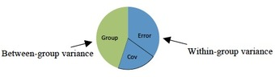{kind=link}
This pie chart shows the partitioning of variance within ANCOVA analysis.
In order to understand this, it is necessary to understand the test used to evaluate differences between groups, the $F$ -test. The $F$ -test is computed by dividing the explained variance between groups (e.g., gender difference) by the unexplained variance within the groups. Thus:
If this value is larger than a critical value, we conclude that there is a significant difference between groups. When we control for the effect of CVs on the DV, we remove it from the denominator making $F$ larger, thereby increasing your power to find a significant effect if one exists.
Adjusting Preexisting Differences. Another use of ANCOVA is to adjust for preexisting differences in nonequivalent (intact) groups. This controversial application aims at correcting for initial group differences (prior to group assignment) that exists on DV among several intact groups. In this situation, participants cannot be made equal through random assignment, so CVs are used to adjust scores and make participants more similar than without the CV.
Assumptions
There are five assumptions that underlie the use of ANCOVA and affect interpretation of the results:
- Normality of Residuals. The residuals (error terms) should be normally distributed.
- Homogeneity of Variances. The error variances should be equal for different treatment classes.
- Homogeneity of Regression Slopes. The slopes of the different regression lines should be equal (in our current context, this assumption is what will be tested).
- Linearity of Regression. The regression relationship between the dependent variable and concomitant variables must be linear.
- Independence of Error terms. The error terms should be uncorrelated.
The Test
In the context of ANCOVA, regression lines are compared by studying the interaction between the treatment effect and the independent variable. If the interaction (i.e., the $F$ statistic mentioned above) is significantly different from zero, we will see differing slopes between the regression lines.
It is also possible to see similar slopes between lines but a different intercept. Differing intercepts can be interpreted as a difference in magnitudes but not in the rate of change. Differing slopes would imply differing rates of change and possibly differing magnitudes, as well.
11.4.3. Least-Squares Regression
The criteria for determining the least squares regression line is that the sum of the squared errors is made as small as possible.
Learning Objective
Describe how OLS are implemented in linear regression
Key Points
- Linear regression dictates that if there is a linear relationship between two variables, you can then use one variable to predict values on the other variable.
- The least squares regression method minimizes the sum of squared vertical distances between the observed responses in the dataset and the responses predicted by the linear approximation.
- Least squares regression provides minimum-variance, mean-unbiased estimation when the errors have finite variances.
Key Terms
- least squares regression
- a statistical technique, based on fitting a straight line to the observed data. It is used for estimating changes in a dependent variable which is in a linear relationship with one or more independent variables
- sum of squared errors
- a mathematical approach to determining the dispersion of data points; found by squaring the distance between each data point and the line of best fit and then summing all of the squares
- homoscedastic
- if all random variables in a sequence or vector have the same finite variance
Least Squares Regression
The process of fitting the best- fit line is called linear regression. Finding the best fit line is based on the assumption that the data are scattered about a straight line. The criteria for the best fit line is that the sum of squared errors (SSE) is made as small as possible. Any other potential line would have a higher SSE than the best fit line. Therefore, this best fit line is called the least squares regression line.
Here is a scatter plot that shows a correlation between ordinary test scores and final exam test scores for a statistics class:
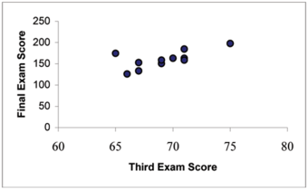{kind=link}
This graph shows the various scattered data points of test scores.
The following figure shows how a best fit line can be drawn through the scatter plot graph: .
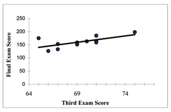{kind=link}
This shows how the scatter plots form a best fit line, implying there may be correlation.
Ordinary Least Squares Regression
Ordinary Least Squares (OLS) regression (or simply "regression") is a useful tool for examining the relationship between two or more interval/ratio variables assuming there is a linear relationship between said variables. If the relationship is not linear, OLS regression may not be the ideal tool for the analysis, or modifications to the variables/analysis may be required. If there is a linear relationship between two variables, you can use one variable to predict values of the other variable. For example, because there is a linear relationship between height and weight, if you know someone's height, you can better estimate their weight. Using a basic line formula, you can calculate predicted values of your dependent variable using your independent variable, allowing you to make better predictions.
This method minimizes the sum of squared vertical distances between the observed responses in the dataset and the responses predicted by the linear approximation. The resulting estimator can be expressed by a simple formula, especially in the case of a single regressor on the right-hand side. The OLS estimator is consistent when the regressors are exogenous and there is no perfect multicollinearity. It is considered optimal in the class of linear unbiased estimators when the errors are homoscedastic and serially uncorrelated. Under these conditions, the method of OLS provides minimum-variance, mean-unbiased estimation when the errors have finite variances. Under the additional assumption that the errors are normally distributed, OLS is the maximum likelihood estimator. OLS is used in fields such as economics (econometrics), political science, and electrical engineering (control theory and signal processing), among others
11.4.4. Model Assumptions
Standard linear regression models with standard estimation techniques make a number of assumptions.
Learning Objective
Contrast standard estimation techniques for standard linear regression
Key Points
- There are five major assumptions made by standard linear regression models.
- The arrangement, or probability distribution, of the predictor variables $x$ has a major influence on the precision of estimates of $\beta$ .
- Extensions of the major assumptions make the estimation procedure more complex and time-consuming, and may even require more data in order to get an accurate model.
Key Term
- exogeneity
- a condition in linear regression wherein the variable is independent of all other response values
Standard linear regression models with standard estimation techniques make a number of assumptions about the predictor variables, the response variables, and their relationship. Numerous extensions have been developed that allow each of these assumptions to be relaxed (i.e. reduced to a weaker form), and in some cases eliminated entirely. Some methods are general enough that they can relax multiple assumptions at once, and in other cases this can be achieved by combining different extensions. Generally, these extensions make the estimation procedure more complex and time-consuming, and may even require more data in order to get an accurate model.
The following are the major assumptions made by standard linear regression models with standard estimation techniques (e.g. ordinary least squares):
Weak exogeneity. This essentially means that the predictor variables $x$ can be treated as fixed values rather than random variables. This means, for example, that the predictor variables are assumed to be error-free; that is, they are not contaminated with measurement errors. Although unrealistic in many settings, dropping this assumption leads to significantly more difficult errors-in-variables models.
Linearity. This means that the mean of the response variable is a linear combination of the parameters (regression coefficients) and the predictor variables. Note that this assumption is far less restrictive than it may at first seem. Because the predictor variables are treated as fixed values (see above), linearity is really only a restriction on the parameters. The predictor variables themselves can be arbitrarily transformed, and in fact multiple copies of the same underlying predictor variable can be added, each one transformed differently. This trick is used, for example, in polynomial regression, which uses linear regression to fit the response variable as an arbitrary polynomial function (up to a given rank) of a predictor variable. This makes linear regression an extremely powerful inference method. In fact, models such as polynomial regression are often "too powerful" in that they tend to overfit the data. As a result, some kind of regularization must typically be used to prevent unreasonable solutions coming out of the estimation process.
Constant variance (aka homoscedasticity). This means that different response variables have the same variance in their errors, regardless of the values of the predictor variables. In practice, this assumption is invalid (i.e. the errors are heteroscedastic) if the response variables can vary over a wide scale. In order to determine for heterogeneous error variance, or when a pattern of residuals violates model assumptions of homoscedasticity (error is equally variable around the 'best-fitting line' for all points of $x$ ), it is prudent to look for a "fanning effect" between residual error and predicted values. This is to say there will be a systematic change in the absolute or squared residuals when plotted against the predicting outcome. Error will not be evenly distributed across the regression line. Heteroscedasticity will result in the averaging over of distinguishable variances around the points to get a single variance that is inaccurately representing all the variances of the line. In effect, residuals appear clustered and spread apart on their predicted plots for larger and smaller values for points along the linear regression line, and the mean squared error for the model will be wrong. Typically, for example, a response variable whose mean is large will have a greater variance than one whose mean is small.
Independence of errors. This assumes that the errors of the response variables are uncorrelated with each other. (Actual statistical independence is a stronger condition than mere lack of correlation and is often not needed, although it can be exploited if it is known to hold. ) Some methods (e.g. generalized least squares) are capable of handling correlated errors, although they typically require significantly more data unless some sort of regularization is used to bias the model towards assuming uncorrelated errors. Bayesian linear regression is a general way of handling this issue.
Lack of multicollinearity in the predictors. For standard least squares estimation methods, the design matrix $X$ must have full column rank $p$ ; otherwise, we have a condition known as multicollinearity in the predictor variables. This can be triggered by having two or more perfectly correlated predictor variables (e.g. if the same predictor variable is mistakenly given twice, either without transforming one of the copies or by transforming one of the copies linearly). It can also happen if there is too little data available compared to the number of parameters to be estimated (e.g. fewer data points than regression coefficients). Beyond these assumptions, several other statistical properties of the data strongly influence the performance of different estimation methods:
The statistical relationship between the error terms and the regressors plays an important role in determining whether an estimation procedure has desirable sampling properties such as being unbiased and consistent.
The arrangement, or probability distribution, of the predictor variables $x$ has a major influence on the precision of estimates of $\beta$ . Sampling and design of experiments are highly-developed subfields of statistics that provide guidance for collecting data in such a way as to achieve a precise estimate of $\beta$ .

A graphical representation of a best fit line for simple linear regression.
11.4.5. Making Inferences About the Slope
The slope of the best fit line tells us how the dependent variable $y$ changes for every one unit increase in the independent variable $x$ , on average.
Learning Objective
Infer how variables are related based on the slope of a regression line
Key Points
- It is important to interpret the slope of the line in the context of the situation represented by the data.
- A fitted linear regression model can be used to identify the relationship between a single predictor variable $x$ and the response variable $y$ when all the other predictor variables in the model are "held fixed".
- The interpretation of $m$ (slope) is the expected change in $y$ for a one-unit change in $x$ when the other covariates are held fixed.
Key Terms
- covariate
- a variable that is possibly predictive of the outcome under study
- intercept
- the coordinate of the point at which a curve intersects an axis
- slope
- the ratio of the vertical and horizontal distances between two points on a line; zero if the line is horizontal, undefined if it is vertical.
Making Inferences About the Slope
The slope of the regression line describes how changes in the variables are related. It is important to interpret the slope of the line in the context of the situation represented by the data. You should be able to write a sentence interpreting the slope in plain English.
The slope of the best fit line tells us how the dependent variable $y$ changes for every one unit increase in the independent variable $x$ , on average.
Remember the equation for a line is:
where $y$ is the dependent variable, $x$ is the independent variable, $m$ is the slope, and $b$ is the intercept.
A fitted linear regression model can be used to identify the relationship between a single predictor variable, $x$, and the response variable, $y$, when all the other predictor variables in the model are "held fixed". Specifically, the interpretation of $m$ is the expected change in $y$ for a one-unit change in $x$ when the other covariates are held fixed—that is, the expected value of the partial derivative of $y$ with respect to $x$ . This is sometimes called the unique effect of $x$ on $y$ . In contrast, the marginal effect of $x$ on $y$ can be assessed using a correlation coefficient or simple linear regression model relating $x$ to $y$ ; this effect is the total derivative of $y$ with respect to $x$ .
Care must be taken when interpreting regression results, as some of the regressors may not allow for marginal changes (such as dummy variables, or the intercept term), while others cannot be held fixed.
It is possible that the unique effect can be nearly zero even when the marginal effect is large. This may imply that some other covariate captures all the information in $x$ , so that once that variable is in the model, there is no contribution of $x$ to the variation in $y$ . Conversely, the unique effect of $x$ can be large while its marginal effect is nearly zero. This would happen if the other covariates explained a great deal of the variation of $y$ , but they mainly explain said variation in a way that is complementary to what is captured by $x$ . In this case, including the other variables in the model reduces the part of the variability of $y$ that is unrelated to $x$ , thereby strengthening the apparent relationship with $x$ .
The meaning of the expression "held fixed" may depend on how the values of the predictor variables arise. If the experimenter directly sets the values of the predictor variables according to a study design, the comparisons of interest may literally correspond to comparisons among units whose predictor variables have been "held fixed" by the experimenter. Alternatively, the expression "held fixed" can refer to a selection that takes place in the context of data analysis. In this case, we "hold a variable fixed" by restricting our attention to the subsets of the data that happen to have a common value for the given predictor variable. This is the only interpretation of "held fixed" that can be used in an observational study.
The notion of a "unique effect" is appealing when studying a complex system where multiple interrelated components influence the response variable. In some cases, it can literally be interpreted as the causal effect of an intervention that is linked to the value of a predictor variable. However, it has been argued that in many cases multiple regression analysis fails to clarify the relationships between the predictor variables and the response variables when the predictors are correlated with each other and are not assigned following a study design.
11.4.6. Regression Toward the Mean: Estimation and Prediction
Regression toward the mean says that if a variable is extreme on its 1st measurement, it will tend to be closer to the average on its 2nd.
Learning Objective
Explain regression towards the mean for variables that are extreme on their first measurement
Key Points
- The conditions under which regression toward the mean occurs depend on the way the term is mathematically defined.
- Regression toward the mean is a significant consideration in the design of experiments.
- Statistical regression toward the mean is not a causal phenomenon.
Key Term
- bivariate distribution
- gives the probability that both of two random variables fall in a particular range or discrete set of values specified for that variable
Example
- Take a hypothetical example of 1,000 individuals of a similar age who were examined and scored on the risk of experiencing a heart attack. Statistics could be used to measure the success of an intervention on the 50 who were rated at the greatest risk. The intervention could be a change in diet, exercise, or a drug treatment. Even if the interventions are worthless, the test group would be expected to show an improvement on their next physical exam, because of regression toward the mean. The best way to combat this effect is to divide the group randomly into a treatment group that receives the treatment, and a control group that does not. The treatment would then be judged effective only if the treatment group improves more than the control group.
In statistics, regression toward (or to) the mean is the phenomenon that if a variable is extreme on its first measurement, it will tend to be closer to the average on its second measurement—and, paradoxically, if it is extreme on its second measurement, it will tend to be closer to the average on its first. To avoid making wrong inferences, regression toward the mean must be considered when designing scientific experiments and interpreting data.
The conditions under which regression toward the mean occurs depend on the way the term is mathematically defined. Sir Francis Galton first observed the phenomenon in the context of simple linear regression of data points. However, a less restrictive approach is possible. Regression towards the mean can be defined for any bivariate distribution with identical marginal distributions. Two such definitions exist. One definition accords closely with the common usage of the term "regression towards the mean". Not all such bivariate distributions show regression towards the mean under this definition. However, all such bivariate distributions show regression towards the mean under the other definition.
Historically, what is now called regression toward the mean has also been called reversion to the mean and reversion to mediocrity.
Consider a simple example: a class of students takes a 100-item true/false test on a subject. Suppose that all students choose randomly on all questions. Then, each student's score would be a realization of one of a set of independent and identically distributed random variables, with a mean of 50. Naturally, some students will score substantially above 50 and some substantially below 50 just by chance. If one takes only the top scoring 10% of the students and gives them a second test on which they again choose randomly on all items, the mean score would again be expected to be close to 50. Thus the mean of these students would "regress" all the way back to the mean of all students who took the original test. No matter what a student scores on the original test, the best prediction of his score on the second test is 50.
If there were no luck or random guessing involved in the answers supplied by students to the test questions, then all students would score the same on the second test as they scored on the original test, and there would be no regression toward the mean.
Most realistic situations fall between these two extremes: for example, one might consider exam scores as a combination of skill and luck. In this case, the subset of students scoring above average would be composed of those who were skilled and had not especially bad luck, together with those who were unskilled, but were extremely lucky. On a retest of this subset, the unskilled will be unlikely to repeat their lucky break, while the skilled will have a second chance to have bad luck. Hence, those who did well previously are unlikely to do quite as well in the second test.
The following is a second example of regression toward the mean. A class of students takes two editions of the same test on two successive days. It has frequently been observed that the worst performers on the first day will tend to improve their scores on the second day, and the best performers on the first day will tend to do worse on the second day. The phenomenon occurs because student scores are determined in part by underlying ability and in part by chance. For the first test, some will be lucky, and score more than their ability, and some will be unlucky and score less than their ability. Some of the lucky students on the first test will be lucky again on the second test, but more of them will have (for them) average or below average scores. Therefore a student who was lucky on the first test is more likely to have a worse score on the second test than a better score. Similarly, students who score less than the mean on the first test will tend to see their scores increase on the second test.
Regression toward the mean is a significant consideration in the design of experiments.
The concept of regression toward the mean can be misused very easily.In the student test example above, it was assumed implicitly that what was being measured did not change between the two measurements. Suppose, however, that the course was pass/fail and students were required to score above 70 on both tests to pass. Then the students who scored under 70 the first time would have no incentive to do well, and might score worse on average the second time. The students just over 70, on the other hand, would have a strong incentive to study and concentrate while taking the test. In that case one might see movement away from 70, scores below it getting lower and scores above it getting higher. It is possible for changes between the measurement times to augment, offset or reverse the statistical tendency to regress toward the mean.
Statistical regression toward the mean is not a causal phenomenon. A student with the worst score on the test on the first day will not necessarily increase her score substantially on the second day due to the effect. On average, the worst scorers improve, but that is only true because the worst scorers are more likely to have been unlucky than lucky. To the extent that a score is determined randomly, or that a score has random variation or error, as opposed to being determined by the student's academic ability or being a "true value", the phenomenon will have an effect.
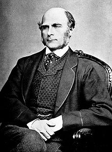{kind=link}
Sir Frances Galton first observed the phenomenon of regression towards the mean in genetics research.
11.5. R.M.S. Error for Regression
11.5.1. Computing R.M.S. Error
RMS error measures the differences between values predicted by a model or an estimator and the values actually observed.
Learning Objective
Define and compute root-mean-square error.
Key Points
- These individual differences are called residuals when the calculations are performed over the data sample that was used for estimation, and are called prediction errors when computed out-of-sample.
- The differences between values occur because of randomness or because the estimator doesn't account for information that could produce a more accurate estimate.
- RMS error serves to aggregate the magnitudes of the errors in predictions for various times into a single measure of predictive power.
- In terms of a regression line, the error for the differing values is simply the distance of a point above or below the line.
- In general, about 68% of points on a scatter diagram are within one RMS error of the regression line, and about 95% are within two.
Key Term
- root-mean-square error
- (RMS error) A frequently used measure of the differences between values predicted by a model or an estimator and the values actually observed.
Root-mean-square (RMS) error, also known as RMS deviation, is a frequently used measure of the differences between values predicted by a model or an estimator and the values actually observed. These individual differences are called residuals when the calculations are performed over the data sample that was used for estimation, and are called prediction errors when computed out-of-sample. The differences between values occur because of randomness or because the estimator doesn't account for information that could produce a more accurate estimate.
Root-mean-square error serves to aggregate the magnitudes of the errors in predictions for various times into a single measure of predictive power. It is also a good measure of accuracy, but only to compare forecasting errors of different models for a particular variable and not between variables, as it is scale-dependent.
RMS error is the square root of mean squared error (MSE), which is a risk function corresponding to the expected value of the squared error loss or quadratic loss. MSE measures the average of the squares of the "errors. " The MSE is the second moment (about the origin) of the error, and thus incorporates both the variance of the estimator and its bias. For an unbiased estimator, the MSE is the variance of the estimator. Like the variance, MSE has the same units of measurement as the square of the quantity being estimated.
Computing MSE and RMSE
If Y^\hat { Y } is a vector of $n$ predictions, and YY is the vector of the true values, then the (estimated) MSE of the predictor is as given as the formula:
This is a known, computed quantity given a particular sample (and hence is sample-dependent). RMS error is simply the square root of the resulting MSE quantity.
RMS Error for the Regression Line
In terms of a regression line, the error for the differing values is simply the distance of a point above or below the line. We can find the general size of these errors by taking the RMS size for them:
$\displaystyle \sqrt { \frac { { \left( \text{error}\ 1 \right) }^{ 2 }+{ \left(\text{error}\ 2 \right) }^{ 2 }+\cdots +{ \left( \text{error n} \right) }^{ 2 } }{ n } }$ .
This calculation results in the RMS error of the regression line, which tells us how far above or below the line points typically are. In general, about 68% of points on a scatter diagram are within one RMS error of the regression line, and about 95% are within two. This is known as the 68%-95% rule.
11.5.2. Plotting the Residuals
The residual plot illustrates how far away each of the values on the graph is from the expected value (the value on the line).
Learning Objective
Differentiate between scatter and residual plots, and between errors and residuals
Key Points
- The sum of the residuals within a random sample is necessarily zero, and thus the residuals are necessarily not independent.
- The average of the residuals is always equal to zero; therefore, the standard deviation of the residuals is equal to the RMS error of the regression line.
- We see heteroscedasticity in a resitual plot as the difference in the scatter of the residuals for different ranges of values of the independent variable.
Key Terms
- scatter plot
- A type of display using Cartesian coordinates to display values for two variables for a set of data.
- heteroscedasticity
- The property of a series of random variables of not every variable having the same finite variance.
- residual
- The difference between the observed value and the estimated function value.
Errors Versus Residuals
Statistical errors and residuals are two closely related and easily confused measures of the deviation of an observed value of an element of a statistical sample from its "theoretical value. " The error of an observed value is the deviation of the observed value from the (unobservable) true function value, while the residual of an observed value is the difference between the observed value and the estimated function value.
A statistical error is the amount by which an observation differs from its expected value, the latter being based on the whole population from which the statistical unit was chosen randomly. For example, if the mean height in a population of 21-year-old men is 5' 8", and one randomly chosen man is 5' 10" tall, then the "error" is 2 inches. If the randomly chosen man is 5' 6" tall, then the "error" is $-2$ inches. The expected value, being the mean of the entire population, is typically unobservable, and hence the statistical error cannot be observed either.
A residual (or fitting error), on the other hand, is an observable estimate of the unobservable statistical error. Consider the previous example with men's heights and suppose we have a random sample of $n$ people. The sample mean could serve as a good estimator of the population mean, and we would have the following:
The difference between the height of each man in the sample and the unobservable population mean is a statistical error, whereas the difference between the height of each man in the sample and the observable sample mean is a residual.
Note that the sum of the residuals within a random sample is necessarily zero, and thus the residuals are necessarily not independent. The statistical errors on the other hand are independent, and their sum within the random sample is almost surely not zero.
Residual Plots
In scatter plots we typically plot an $x$ -value and a $y$ -value. To create a residual plot, we simply plot an $x$ -value and a residual value. The residual plot illustrates how far away each of the values on the graph is from the expected value (the value on the line).
The average of the residuals is always equal to zero; therefore, the standard deviation of the residuals is equal to the RMS error of the regression line.
As an example, consider the figure depicting the number of drunk driving fatalities in 2006 and 2009 for various states:
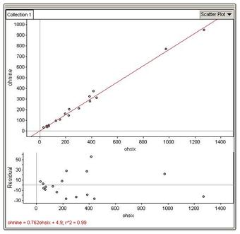{kind=link}
This figure shows a scatter plot, and corresponding residual plot, of the number of drunk driving fatalities in 2006 ($x$ -value) and 2009 ($y$ -value)
The relationship between the number of drunk driving fatalities in 2006 and 2009 is very strong, positive, and linear with an $r^2$ (coefficient of determination) value of 0.99. The high $r^2$ value provides evidence that we can use the linear regression model to accurately predict the number of drunk driving fatalities that will be seen in 2009 after a span of 4 years.
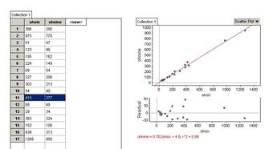{kind=link}
These images depict the highest residual in our example.
Considering the above figure, we see that the high residual dot on the residual plot suggests that the number of drunk driving fatalities that actually occurred in this particular state in 2009 was higher than we expected it would be after the 4 year span, based on the linear regression model. So, based on the linear regression model, for a 2006 value of 415 drunk driving fatalities we would expect the number of drunk driving fatalities in 2009 to be lower than 377. Therefore, the number of fatalities was not lowered as much as we expected they would be, based on the model.
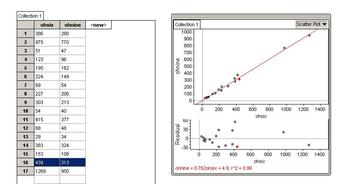{kind=link}
These images depict the lowest residual in our example.
Considering the above figure, we see that the low residual plot suggests that the actual number of drunk driving fatalities in this particular state in 2009 was lower than we would have expected it to be after the 4 year span, based on the linear regression model. So, based on the linear regression model, for a 2006 value of 439 drunk driving fatalities we would expect the number of drunk driving fatalities for 2009 to be higher than 313. Therefore, this particular state is doing an exceptional job at bringing down the number of drunk driving fatalities each year, compared to other states.
Advantages of Residual Plots
Residual plots can allow some aspects of data to be seen more easily.
- We can see nonlinearity in a residual plot when the residuals tend to be predominantly positive for some ranges of values of the independent variable and predominantly negative for other ranges.
- We see outliers in a residual plot depicted as unusually large positive or negative values.
- We see heteroscedasticity in a resitual plot as the difference in the scatter of the residuals for different ranges of values of the independent variable.
The existence of heteroscedasticity is a major concern in regression analysis because it can invalidate statistical tests of significance that assume that the modelling errors are uncorrelated and normally distributed and that their variances do not vary with the effects being modelled.
11.5.3. Homogeneity and Heterogeneity
By drawing vertical strips on a scatter plot and analyzing the spread of the resulting new data sets, we are able to judge degree of homoscedasticity.
Learning Objective
Define, and differentiate between, homoscedasticity and heteroscedasticity.
Key Points
- When drawing a vertical strip on a scatter plot, the $y$ -values that fall within this strip will form a new data set, complete with a new estimated average and RMS error.
- This new data set can also be used to construct a histogram, which can subsequently be used to assess the assumption that the residuals are normally distributed.
- When various vertical strips drawn on a scatter plot, and their corresponding data sets, show a similar pattern of spread, the plot can be said to be homoscedastic (the prediction errors will be similar along the regression line).
- A residual plot displaying homoscedasticity should appear to resemble a horizontal football.
- When a scatter plot is heteroscedastic, the prediction errors differ as we go along the regression line.
Key Terms
- homoscedastic
- if all random variables in a sequence or vector have the same finite variance
- heteroscedasticity
- The property of a series of random variables of not every variable having the same finite variance.
Example
- A classic example of heteroscedasticity is that of income versus expenditure on meals. As one's income increases, the variability of food consumption will increase. A poorer person will spend a rather constant amount by always eating inexpensive food; a wealthier person may occasionally buy inexpensive food and at other times eat expensive meals. Those with higher incomes display a greater variability of food consumption.
Vertical Strips in a Scatter Plot
Imagine that you have a scatter plot, on top of which you draw a narrow vertical strip. The $y$ -values that fall within this strip will form a new data set, complete with a new estimated average and RMS error.
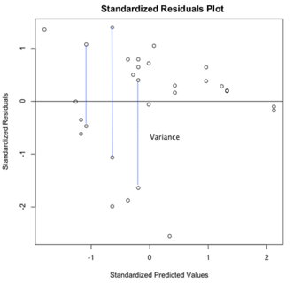{kind=link}
Drawing vertical strips on top of a scatter plot will result in the $y$ -values included in this strip forming a new data set.
This new data set can also be used to construct a histogram, which can subsequently be used to assess the assumption that the residuals are normally distributed. To the extent that the histogram matches the normal distribution, the residuals are normally distributed. This gives us an indication of how well our sample can predict a normal distribution in the population.
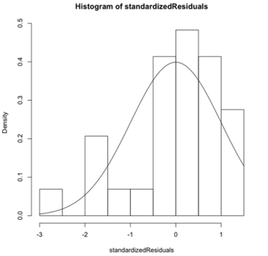{kind=link}
To the extent that a residual histogram matches the normal distribution, the residuals are normally distributed.
Homoscedasticity Versus Heteroscedasticity
When various vertical strips drawn on a scatter plot, and their corresponding data sets, show a similar pattern of spread, the plot can be said to be homoscedastic. Another way of putting this is that the prediction errors will be similar along the regression line.
In technical terms, a data set is homoscedastic if all random variables in the sequence have the same finite variance. A residual plot displaying homoscedasticity should appear to resemble a horizontal football. The presence of this shape lets us know if we can use the regression method. The assumption of homoscedasticity simplifies mathematical and computational treatment; however, serious violations in homoscedasticity may result in overestimating the goodness of fit.
In regression analysis, one assumption of the fitted model (to ensure that the least-squares estimators are each a best linear unbiased estimator of the respective population parameters) is that the standard deviations of the error terms are constant and do not depend on the $x$ -value. Consequently, each probability distribution for $y$ (response variable) has the same standard deviation regardless of the $x$ -value (predictor).
When a scatter plot is heteroscedastic, the prediction errors differ as we go along the regression line. In technical terms, a data set is heteroscedastic if there are sub-populations that have different variabilities from others. Here "variability" could be quantified by the variance or any other measure of statistical dispersion.
The possible existence of heteroscedasticity is a major concern in the application of regression analysis, including the analysis of variance, because the presence of heteroscedasticity can invalidate statistical tests of significance that assume that the modelling errors are uncorrelated and normally distributed and that their variances do not vary with the effects being modelled. Similarly, in testing for differences between sub-populations using a location test, some standard tests assume that variances within groups are equal.
11.6. Multiple Regression
11.6.1. Multiple Regression Models
Multiple regression is used to find an equation that best predicts the $Y$ variable as a linear function of the multiple $X$ variables.
Learning Objective
Describe how multiple regression can be used to predict an unknown
Key Points
- One use of multiple regression is prediction or estimation of an unknown $Y$ value corresponding to a set of $X$ values.
- A second use of multiple regression is to try to understand the functional relationships between the dependent and independent variables, to try to see what might be causing the variation in the dependent variable.
- The main null hypothesis of a multiple regression is that there is no relationship between the $X$ variables and the $Y$ variables--i.e. that the fit of the observed $Y$ values to those predicted by the multiple regression equation is no better than what you would expect by chance.
Key Terms
- multiple regression
- regression model used to find an equation that best predicts the
$Y$ variable as a linear function of multiple$X$ variables - null hypothesis
- A hypothesis set up to be refuted in order to support an alternative hypothesis; presumed true until statistical evidence in the form of a hypothesis test indicates otherwise.
When To Use Multiple Regression
You use multiple regression when you have three or more measurement variables. One of the measurement variables is the dependent ($Y$ ) variable. The rest of the variables are the independent ($X$ ) variables. The purpose of a multiple regression is to find an equation that best predicts the $Y$ variable as a linear function of the $X$ variables.
Multiple Regression For Prediction
One use of multiple regression is prediction or estimation of an unknown $Y$ value corresponding to a set of $X$ values. For example, let's say you're interested in finding a suitable habitat to reintroduce the rare beach tiger beetle, Cicindela dorsalis dorsalis, which lives on sandy beaches on the Atlantic coast of North America. You've gone to a number of beaches that already have the beetles and measured the density of tiger beetles (the dependent variable) and several biotic and abiotic factors, such as wave exposure, sand particle size, beach steepness, density of amphipods and other prey organisms, etc. Multiple regression would give you an equation that would relate the tiger beetle density to a function of all the other variables. Then, if you went to a beach that didn't have tiger beetles and measured all the independent variables (wave exposure, sand particle size, etc.), you could use the multiple regression equation to predict the density of tiger beetles that could live there if you introduced them.
{kind=link}
This is the Atlantic beach tiger beetle (Cicindela dorsalis dorsalis), which is the subject of the multiple regression study in this atom.
Multiple Regression For Understanding Causes
A second use of multiple regression is to try to understand the functional relationships between the dependent and independent variables, to try to see what might be causing the variation in the dependent variable. For example, if you did a regression of tiger beetle density on sand particle size by itself, you would probably see a significant relationship. If you did a regression of tiger beetle density on wave exposure by itself, you would probably see a significant relationship. However, sand particle size and wave exposure are correlated; beaches with bigger waves tend to have bigger sand particles. Maybe sand particle size is really important, and the correlation between it and wave exposure is the only reason for a significant regression between wave exposure and beetle density. Multiple regression is a statistical way to try to control for this; it can answer questions like, "If sand particle size (and every other measured variable) were the same, would the regression of beetle density on wave exposure be significant? "
Null Hypothesis
The main null hypothesis of a multiple regression is that there is no relationship between the $X$ variables and the $Y$ variables-- in other words, that the fit of the observed $Y$ values to those predicted by the multiple regression equation is no better than what you would expect by chance. As you are doing a multiple regression, there is also a null hypothesis for each $X$ variable, meaning that adding that $X$ variable to the multiple regression does not improve the fit of the multiple regression equation any more than expected by chance.
11.6.2. Estimating and Making Inferences About the Slope
The purpose of a multiple regression is to find an equation that best predicts the $Y$ variable as a linear function of the $X$ variables.
Learning Objective
Discuss how partial regression coefficients (slopes) allow us to predict the value of
Key Points
- Partial regression coefficients (the slopes) and the intercept are found when creating an equation of regression so that they minimize the squared deviations between the expected and observed values of $Y$ .
- If you had the partial regression coefficients and measured the $X$ variables, you could plug them into the equation and predict the corresponding value of $Y$ .
- The standard partial regression coefficient is the number of standard deviations that $Y$ would change for every one standard deviation change in $X_1$ , if all the other $X$ variables could be kept constant.
Key Terms
- p-value
- The probability of obtaining a test statistic at least as extreme as the one that was actually observed, assuming that the null hypothesis is true.
- partial regression coefficient
- a value indicating the effect of each independent variable on the dependent variable with the influence of all the remaining variables held constant. Each coefficient is the slope between the dependent variable and each of the independent variables
- standard partial regression coefficient
- the number of standard deviations that
$Y$ would change for every one standard deviation change in$X_1$ , if all the other$X$ variables could be kept constant
You use multiple regression when you have three or more measurement variables. One of the measurement variables is the dependent ($Y$ ) variable. The rest of the variables are the independent ($X$ ) variables. The purpose of a multiple regression is to find an equation that best predicts the $Y$ variable as a linear function of the $X$ variables.
How It Works
The basic idea is that an equation is found like this:
The $Y_{\text{exp}}$ is the expected value of $Y$ for a given set of $X$ values. $b_1$ is the estimated slope of a regression of $Y$ on $X_1$ , if all of the other $X$ variables could be kept constant. This concept applies similarly for $b_2$ , $b_3$ , et cetera. $a$ is the intercept. Values of $b_1$ , et cetera, (the "partial regression coefficients") and the intercept are found so that they minimize the squared deviations between the expected and observed values of $Y$ .
How well the equation fits the data is expressed by $R^2$ , the "coefficient of multiple determination. " This can range from 0 (for no relationship between the $X$ and $Y$ variables) to 1 (for a perfect fit, i.e. no difference between the observed and expected $Y$ values). The $p$ -value is a function of the $R^2$ , the number of observations, and the number of $X$ variables.
Importance of Slope (Partial Regression Coefficients)
When the purpose of multiple regression is prediction, the important result is an equation containing partial regression coefficients (slopes). If you had the partial regression coefficients and measured the $X$ variables, you could plug them into the equation and predict the corresponding value of $Y$ . The magnitude of the partial regression coefficient depends on the unit used for each variable. It does not tell you anything about the relative importance of each variable.
When the purpose of multiple regression is understanding functional relationships, the important result is an equation containing standard partial regression coefficients, like this:
$y'_{\text{exp}} = a+ b'_1x'_1+ b'_2x'_2 + b'_3x'_3 + \cdots$
Where $b'_1$ is the standard partial regression coefficient of $y$ on $X_1$ . It is the number of standard deviations that $Y$ would change for every one standard deviation change in $X_1$ , if all the other $X$ variables could be kept constant. The magnitude of the standard partial regression coefficients tells you something about the relative importance of different variables; $X$ variables with bigger standard partial regression coefficients have a stronger relationship with the $Y$ variable.

A graphical representation of a best fit line for simple linear regression.
11.6.3. Evaluating Model Utility
The results of multiple regression should be viewed with caution.
Learning Objective
Evaluate the potential drawbacks of multiple regression.
Key Points
- You should examine the linear regression of the dependent variable on each independent variable, one at a time, examine the linear regressions between each pair of independent variables, and consider what you know about the subject matter.
- You should probably treat multiple regression as a way of suggesting patterns in your data, rather than rigorous hypothesis testing.
- If independent variables $A$ and $B$ are both correlated with $Y$ , and $A$ and $B$ are highly correlated with each other, only one may contribute significantly to the model, but it would be incorrect to blindly conclude that the variable that was dropped from the model has no significance.
Key Terms
- multiple regression
- regression model used to find an equation that best predicts the
$Y$ variable as a linear function of multiple$X$ variables - dependent variable
- in an equation, the variable whose value depends on one or more variables in the equation
- independent variable
- in an equation, any variable whose value is not dependent on any other in the equation
Multiple regression is beneficial in some respects, since it can show the relationships between more than just two variables; however, it should not always be taken at face value.
It is easy to throw a big data set at a multiple regression and get an impressive-looking output. But many people are skeptical of the usefulness of multiple regression, especially for variable selection, and you should view the results with caution. You should examine the linear regression of the dependent variable on each independent variable, one at a time, examine the linear regressions between each pair of independent variables, and consider what you know about the subject matter. You should probably treat multiple regression as a way of suggesting patterns in your data, rather than rigorous hypothesis testing.
If independent variables $A$ and $B$ are both correlated with $Y$ , and $A$ and $B$ are highly correlated with each other, only one may contribute significantly to the model, but it would be incorrect to blindly conclude that the variable that was dropped from the model has no biological importance. For example, let's say you did a multiple regression on vertical leap in children five to twelve years old, with height, weight, age, and score on a reading test as independent variables. All four independent variables are highly correlated in children, since older children are taller, heavier, and more literate, so it's possible that once you've added weight and age to the model, there is so little variation left that the effect of height is not significant. It would be biologically silly to conclude that height had no influence on vertical leap. Because reading ability is correlated with age, it's possible that it would contribute significantly to the model; this might suggest some interesting followup experiments on children all of the same age, but it would be unwise to conclude that there was a real effect of reading ability and vertical leap based solely on the multiple regression.
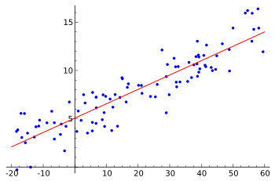{kind=link}
Random data points and their linear regression.
11.6.4. Using the Model for Estimation and Prediction
Standard multiple regression involves several independent variables predicting the dependent variable.
Learning Objective
Analyze the predictive value of multiple regression in terms of the overall model and how well each independent variable predicts the dependent variable.
Key Points
- In addition to telling us the predictive value of the overall model, standard multiple regression tells us how well each independent variable predicts the dependent variable, controlling for each of the other independent variables.
- Significance levels of 0.05 or lower are typically considered significant, and significance levels between 0.05 and 0.10 would be considered marginal.
- An independent variable that is a significant predictor of a dependent variable in simple linear regression may not be significant in multiple regression.
Key Terms
- multiple regression
- regression model used to find an equation that best predicts the
$Y$ variable as a linear function of multiple$X$ variables - significance level
- A measure of how likely it is to draw a false conclusion in a statistical test, when the results are really just random variations.
Using Multiple Regression for Prediction
Standard multiple regression is the same idea as simple linear regression, except now we have several independent variables predicting the dependent variable. Imagine that we wanted to predict a person's height from the gender of the person and from the weight. We would use standard multiple regression in which gender and weight would be the independent variables and height would be the dependent variable. The resulting output would tell us a number of things. First, it would tell us how much of the variance in height is accounted for by the joint predictive power of knowing a person's weight and gender. This value is denoted by $R^2$ . The output would also tell us if the model allows the prediction of a person's height at a rate better than chance. This is denoted by the significance level of the model. Within the social sciences, a significance level of 0.05 is often considered the standard for what is acceptable. Therefore, in our example, if the statistic is 0.05 (or less), then the model is considered significant. In other words, there is only a 5 in a 100 chance (or less) that there really is not a relationship between height, weight and gender. If the significance level is between 0.05 and 0.10, then the model is considered marginal. In other words, the model is fairly good at predicting a person's height, but there is between a 5-10% probability that there really is not a relationship between height, weight and gender.
In addition to telling us the predictive value of the overall model, standard multiple regression tells us how well each independent variable predicts the dependent variable, controlling for each of the other independent variables. In our example, the regression analysis would tell us how well weight predicts a person's height, controlling for gender, as well as how well gender predicts a person's height, controlling for weight.
To see if weight is a "significant" predictor of height, we would look at the significance level associated with weight. Again, significance levels of 0.05 or lower would be considered significant, and significance levels between 0.05 and 0.10 would be considered marginal. Once we have determined that weight is a significant predictor of height, we would want to more closely examine the relationship between the two variables. In other words, is the relationship positive or negative? In this example, we would expect that there would be a positive relationship. In other words, we would expect that the greater a person's weight, the greater the height. (A negative relationship is present in the case in which the greater a person's weight, the shorter the height. ) We can determine the direction of the relationship between weight and height by looking at the regression coefficient associated with weight.
A similar procedure shows us how well gender predicts height. As with weight, we would check to see if gender is a significant predictor of height, controlling for weight. The difference comes when determining the exact nature of the relationship between gender and height. That is, it does not make sense to talk about the effect on height as gender increases or decreases, since gender is not a continuous variable.
Conclusion
As mentioned, the significance levels given for each independent variable indicate whether that particular independent variable is a significant predictor of the dependent variable, over and above the other independent variables. Because of this, an independent variable that is a significant predictor of a dependent variable in simple linear regression may not be significant in multiple regression (i.e., when other independent variables are added into the equation). This could happen because the covariance that the first independent variable shares with the dependent variable could overlap with the covariance that is shared between the second independent variable and the dependent variable. Consequently, the first independent variable is no longer uniquely predictive and would not be considered significant in multiple regression. Because of this, it is possible to get a highly significant $R^2$ , but have none of the independent variables be significant.

This image shows data points and their linear regression. Multiple regression is the same idea as single regression, except we deal with more than one independent variables predicting the dependent variable.
11.6.5. Interaction Models
In regression analysis, an interaction may arise when considering the relationship among three or more variables.
Learning Objective
Outline the problems that can arise when the simultaneous influence of two variables on a third is not additive.
Key Points
- If two variables of interest interact, the relationship between each of the interacting variables and a third "dependent variable" depends on the value of the other interacting variable.
- In practice, the presence of interacting variables makes it more difficult to predict the consequences of changing the value of a variable, particularly if the variables it interacts with are hard to measure or difficult to control.
- The interaction between an explanatory variable and an environmental variable suggests that the effect of the explanatory variable has been moderated or modified by the environmental variable.
Key Term
- interaction variable
- A variable constructed from an original set of variables to try to represent either all of the interaction present or some part of it.
In statistics, an interaction may arise when considering the relationship among three or more variables, and describes a situation in which the simultaneous influence of two variables on a third is not additive. Most commonly, interactions are considered in the context of regression analyses.
The presence of interactions can have important implications for the interpretation of statistical models. If two variables of interest interact, the relationship between each of the interacting variables and a third "dependent variable" depends on the value of the other interacting variable. In practice, this makes it more difficult to predict the consequences of changing the value of a variable, particularly if the variables it interacts with are hard to measure or difficult to control.
The notion of "interaction" is closely related to that of "moderation" that is common in social and health science research: the interaction between an explanatory variable and an environmental variable suggests that the effect of the explanatory variable has been moderated or modified by the environmental variable.
Interaction Variables in Modeling
An interaction variable is a variable constructed from an original set of variables in order to represent either all of the interaction present or some part of it. In exploratory statistical analyses, it is common to use products of original variables as the basis of testing whether interaction is present with the possibility of substituting other more realistic interaction variables at a later stage. When there are more than two explanatory variables, several interaction variables are constructed, with pairwise-products representing pairwise-interactions and higher order products representing higher order interactions.
A simple setting in which interactions can arise is a two-factor experiment analyzed using Analysis of Variance (ANOVA). Suppose we have two binary factors $A$ and $B$ . For example, these factors might indicate whether either of two treatments were administered to a patient, with the treatments applied either singly, or in combination. We can then consider the average treatment response (e.g. the symptom levels following treatment) for each patient, as a function of the treatment combination that was administered. The following table shows one possible situation:
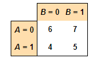{kind=link}
A table showing no interaction between the two treatments — their effects are additive.
In this example, there is no interaction between the two treatments — their effects are additive. The reason for this is that the difference in mean response between those subjects receiving treatment $A$ and those not receiving treatment $A$ is $-2$ , regardless of whether treatment $B$ is administered ($-2 = 4-6$ ) or not ($-2 = 5-7$ ). Note: It automatically follows that the difference in mean response between those subjects receiving treatment $B$ and those not receiving treatment $B$ is the same, regardless of whether treatment $A$ is administered ($7=6=5-4$ ).
In contrast, if the average responses as in are observed, then there is an interaction between the treatments — their effects are not additive. Supposing that greater numbers correspond to a better response, in this situation treatment $B$ is helpful on average if the subject is not also receiving treatment $A$ , but is more helpful on average if given in combination with treatment $A$ . Treatment $A$ is helpful on average regardless of whether treatment $B$ is also administered, but it is more helpful in both absolute and relative terms if given alone, rather than in combination with treatment $B$ .
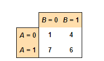{kind=link}
A table showing an interaction between the treatments — their effects are not additive.
11.6.6. Polynomial Regression
The goal of polynomial regression is to model a non-linear relationship between the independent and dependent variables.
Learning Objective
Explain how the linear and nonlinear aspects of polynomial regression make it a special case of multiple linear regression.
Key Points
- Polynomial regression is a higher order form of linear regression in which the relationship between the independent variable x and the dependent variable $y$ is modeled as an $n$th order polynomial.
- Polynomial regression models are usually fit using the method of least squares.
- Although polynomial regression is technically a special case of multiple linear regression, the interpretation of a fitted polynomial regression model requires a somewhat different perspective.
Key Terms
- least squares
- a standard approach to find the equation of regression that minimizes the sum of the squares of the errors made in the results of every single equation
- orthogonal
- statistically independent, with reference to variates
- polynomial regression
- a higher order form of linear regression in which the relationship between the independent variable
$x$ and the dependent variable$y$ is modeled as an$n$ th order polynomial
Polynomial Regression
Polynomial regression is a higher order form of linear regression in which the relationship between the independent variable $x$ and the dependent variable $y$ is modeled as an $n$th order polynomial. Polynomial regression fits a nonlinear relationship between the value of $x$ and the corresponding conditional mean of $y$ , denoted $E(y\ | \ x)$ , and has been used to describe nonlinear phenomena such as the growth rate of tissues, the distribution of carbon isotopes in lake sediments, and the progression of disease epidemics. Although polynomial regression fits a nonlinear model to the data, as a statistical estimation problem it is linear, in the sense that the regression function $E(y\ | \ x)$ is linear in the unknown parameters that are estimated from the data. For this reason, polynomial regression is considered to be a special case of multiple linear regression.
History
Polynomial regression models are usually fit using the method of least-squares. The least-squares method minimizes the variance of the unbiased estimators of the coefficients, under the conditions of the Gauss–Markov theorem. The least-squares method was published in 1805 by Legendre and in 1809 by Gauss. The first design of an experiment for polynomial regression appeared in an 1815 paper of Gergonne. In the 20th century, polynomial regression played an important role in the development of regression analysis, with a greater emphasis on issues of design and inference. More recently, the use of polynomial models has been complemented by other methods, with non-polynomial models having advantages for some classes of problems.
Interpretation
Although polynomial regression is technically a special case of multiple linear regression, the interpretation of a fitted polynomial regression model requires a somewhat different perspective. It is often difficult to interpret the individual coefficients in a polynomial regression fit, since the underlying monomials can be highly correlated. For example, $x$ and $x^2$ have correlation around 0.97 when $x$ is uniformly distributed on the interval $(0, 1)$ . Although the correlation can be reduced by using orthogonal polynomials, it is generally more informative to consider the fitted regression function as a whole. Point-wise or simultaneous confidence bands can then be used to provide a sense of the uncertainty in the estimate of the regression function.
Alternative Approaches
Polynomial regression is one example of regression analysis using basis functions to model a functional relationship between two quantities. A drawback of polynomial bases is that the basis functions are "non-local," meaning that the fitted value of $y$ at a given value $x=x_0$ depends strongly on data values with $x$ far from $x_0$ . In modern statistics, polynomial basis-functions are used along with new basis functions, such as splines, radial basis functions, and wavelets. These families of basis functions offer a more parsimonious fit for many types of data.
The goal of polynomial regression is to model a non-linear relationship between the independent and dependent variables (technically, between the independent variable and the conditional mean of the dependent variable). This is similar to the goal of non-parametric regression, which aims to capture non-linear regression relationships. Therefore, non-parametric regression approaches such as smoothing can be useful alternatives to polynomial regression. Some of these methods make use of a localized form of classical polynomial regression. An advantage of traditional polynomial regression is that the inferential framework of multiple regression can be used.
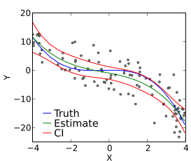{kind=link}
A cubic polynomial regression fit to a simulated data set.
11.6.7. Qualitative Variable Models
Dummy, or qualitative variables, often act as independent variables in regression and affect the results of the dependent variables.
Learning Objective
Break down the method of inserting a dummy variable into a regression analysis in order to compensate for the effects of a qualitative variable.
Key Points
- In regression analysis, the dependent variables may be influenced not only by quantitative variables (income, output, prices, etc.), but also by qualitative variables (gender, religion, geographic region, etc.).
- A dummy variable (also known as a categorical variable, or qualitative variable) is one that takes the value 0 or 1 to indicate the absence or presence of some categorical effect that may be expected to shift the outcome.
- One type of ANOVA model, applicable when dealing with qualitative variables, is a regression model in which the dependent variable is quantitative in nature but all the explanatory variables are dummies (qualitative in nature).
- Qualitative regressors, or dummies, can have interaction effects between each other, and these interactions can be depicted in the regression model.
Key Terms
- qualitative variable
- Also known as categorical variable; has no natural sense of ordering; takes on names or labels.
- ANOVA Model
- Analysis of variance model; used to analyze the differences between group means and their associated procedures in which the observed variance in a particular variable is partitioned into components attributable to different sources of variation.
In statistics, particularly in regression analysis, a dummy variable (also known as a categorical variable, or qualitative variable) is one that takes the value 0 or 1 to indicate the absence or presence of some categorical effect that may be expected to shift the outcome. Dummy variables are used as devices to sort data into mutually exclusive categories (such smoker/non-smoker, etc.).
Dummy variables are "proxy" variables, or numeric stand-ins for qualitative facts in a regression model. In regression analysis, the dependent variables may be influenced not only by quantitative variables (income, output, prices, etc.), but also by qualitative variables (gender, religion, geographic region, etc.). A dummy independent variable (also called a dummy explanatory variable), which for some observation has a value of 0 will cause that variable's coefficient to have no role in influencing the dependent variable, while when the dummy takes on a value 1 its coefficient acts to alter the intercept.
For example, if gender is one of the qualitative variables relevant to a regression, then the categories included under the gender variable would be female and male. If female is arbitrarily assigned the value of 1, then male would get the value 0. The intercept (the value of the dependent variable if all other explanatory variables hypothetically took on the value zero) would be the constant term for males but would be the constant term plus the coefficient of the gender dummy in the case of females.
ANOVA Models
Analysis of variance (ANOVA) models are a collection of statistical models used to analyze the differences between group means and their associated procedures (such as "variation" among and between groups). One type of ANOVA model, applicable when dealing with qualitative variables, is a regression model in which the dependent variable is quantitative in nature but all the explanatory variables are dummies (qualitative in nature).
This type of ANOVA modelcan have differing numbers of qualitative variables. An example with one qualitative variable might be if we wanted to run a regression to find out if the average annual salary of public school teachers differs among three geographical regions in a country . An example with two qualitative variables might be if hourly wages were explained in terms of the qualitative variables marital status (married / unmarried) and geographical region (North / non-North).
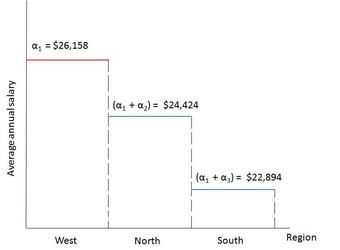{kind=link}
Graph showing the regression results of the ANOVA model example: Average annual salaries of public school teachers in 3 regions of a country.
Qualitative regressors, or dummies, can have interaction effects between each other, and these interactions can be depicted in the regression model. For example, in a regression involving determination of wages, if two qualitative variables are considered, namely, gender and marital status, there could be an interaction between marital status and gender.
11.6.8. Models with Both Quantitative and Qualitative Variables
A regression model that contains a mixture of quantitative and qualitative variables is called an Analysis of Covariance (ANCOVA) model.
Learning Objective
Demonstrate how to conduct an Analysis of Covariance, its assumptions, and its use in regression models containing a mixture of quantitative and qualitative variables.
Key Points
- ANCOVA is a general linear model which blends ANOVA and regression. It evaluates whether population means of a dependent variable (DV) are equal across levels of a categorical independent variable (IV), while statistically controlling for the effects of covariates (CV).
- ANCOVA can be used to increase statistical power and to adjust for preexisting differences in nonequivalent (intact) groups.
- There are five assumptions that underlie the use of ANCOVA and affect interpretation of the results: normality of residuals, homogeneity of variances, homogeneity of regression slopes, linearity of regression, and independence of error terms.
- When conducting ANCOVA, one should: test multicollinearity, test the homogeneity of variance assumption, test the homogeneity of regression slopes assumption, run ANCOVA analysis, and run follow-up analyses.
Key Terms
- ANCOVA model
- Analysis of covariance; a general linear model which blends ANOVA and regression; evaluates whether population means of a dependent variable (DV) are equal across levels of a categorical independent variable (IV), while statistically controlling for the effects of other continuous variables that are not of primary interest, known as covariates.
- ANOVA Model
- Analysis of variance; used to analyze the differences between group means and their associated procedures (such as "variation" among and between groups), in which the observed variance in a particular variable is partitioned into components attributable to different sources of variation.
- covariance
- A measure of how much two random variables change together.
- concomitant
- Happening at the same time as something else, especially because one thing is related to or causes the other (i.e., concurrent).
A regression model that contains a mixture of both quantitative and qualitative variables is called an Analysis of Covariance (ANCOVA) model. ANCOVA models are extensions of ANOVA models. They are the statistic control for the effects of quantitative explanatory variables (also called covariates or control variables).
Covariance is a measure of how much two variables change together and how strong the relationship is between them. Analysis of covariance (ANCOVA) is a general linear model which blends ANOVA and regression. ANCOVA evaluates whether population means of a dependent variable (DV) are equal across levels of a categorical independent variable (IV), while statistically controlling for the effects of other continuous variables that are not of primary interest, known as covariates (CV). Therefore, when performing ANCOVA, we are adjusting the DV means to what they would be if all groups were equal on the CV.
Uses of ANCOVA
ANCOVA can be used to increase statistical power (the ability to find a significant difference between groups when one exists) by reducing the within-group error variance.
ANCOVA can also be used to adjust for preexisting differences in nonequivalent (intact) groups. This controversial application aims at correcting for initial group differences (prior to group assignment) that exists on DV among several intact groups. In this situation, participants cannot be made equal through random assignment, so CVs are used to adjust scores and make participants more similar than without the CV. However, even with the use of covariates, there are no statistical techniques that can equate unequal groups. Furthermore, the CV may be so intimately related to the IV that removing the variance on the DV associated with the CV would remove considerable variance on the DV, rendering the results meaningless.
Assumptions of ANCOVA
There are five assumptions that underlie the use of ANCOVA and affect interpretation of the results:
- Normality of Residuals. The residuals (error terms) should be normally distributed.
- Homogeneity of Variances. The error variances should be equal for different treatment classes.
- Homogeneity of Regression Slopes. The slopes of the different regression lines should be equal.
- Linearity of Regression. The regression relationship between the dependent variable and concomitant variables must be linear.
- Independence of Error Terms. The error terms should be uncorrelated.
Conducting an ANCOVA
- Test Multicollinearity. If a CV is highly related to another CV (at a correlation of .5 or more), then it will not adjust the DV over and above the other CV. One or the other should be removed since they are statistically redundant.
- Test the Homogeneity of Variance Assumption. This is most important after adjustments have been made, but if you have it before adjustment you are likely to have it afterwards.
- Test the Homogeneity of Regression Slopes Assumption. To see if the CV significantly interacts with the IV, run an ANCOVA model including both the IV and the CVxIV interaction term. If the CVxIV interaction is significant, ANCOVA should not be performed. Instead, consider using a moderated regression analysis, treating the CV and its interaction as another IV. Alternatively, one could use mediation analyses to determine if the CV accounts for the IV's effect on the DV.
- Run ANCOVA Analysis. If the CVxIV interaction is not significant, rerun the ANCOVA without the CVxIV interaction term. In this analysis, you need to use the adjusted means and adjusted MSerror. The adjusted means refer to the group means after controlling for the influence of the CV on the DV.
- Follow-up Analyses. If there was a significant main effect, there is a significant difference between the levels of one IV, ignoring all other factors. To find exactly which levels differ significantly from one another, one can use the same follow-up tests as for the ANOVA. If there are two or more IVs, there may be a significant interaction, so that the effect of one IV on the DV changes depending on the level of another factor. One can investigate the simple main effects using the same methods as in a factorial ANOVA.
{kind=link}
Graph showing the regression results of an ANCOVA model example: Public school teacher's salary (Y) in relation to state expenditure per pupil on public schools.
11.6.9. Comparing Nested Models
Multilevel (nested) models are appropriate for research designs where data for participants are organized at more than one level.
Learning Objective
Outline how nested models allow us to examine multilevel data.
Key Points
- Three types of nested models include the random intercepts model, the random slopes model, and the random intercept and slopes model.
- Nested models are used under the assumptions of linearity, normality, homoscedasticity, and independence of observations.
- The units of analysis is a nested model are usually individuals (at a lower level) who are nested within contextual/aggregate units (at a higher level).
Key Terms
- nested model
- statistical model of parameters that vary at more than one level
- homoscedasticity
- A property of a set of random variables where each variable has the same finite variance.
- covariance
- A measure of how much two random variables change together.
Multilevel models, or nested models, are statistical models of parameters that vary at more than one level. These models can be seen as generalizations of linear models (in particular, linear regression); although, they can also extend to non-linear models. Though not a new idea, they have been much more popular following the growth of computing power and the availability of software.
Multilevel models are particularly appropriate for research designs where data for participants are organized at more than one level (i.e., nested data). The units of analysis are usually individuals (at a lower level) who are nested within contextual/aggregate units (at a higher level). While the lowest level of data in multilevel models is usually an individual, repeated measurements of individuals may also be examined. As such, multilevel models provide an alternative type of analysis for univariate or multivariate analysis of repeated measures. Individual differences in growth curves may be examined. Furthermore, multilevel models can be used as an alternative to analysis of covariance (ANCOVA), where scores on the dependent variable are adjusted for covariates (i.e., individual differences) before testing treatment differences. Multilevel models are able to analyze these experiments without the assumptions of homogeneity-of-regression slopes that is required by ANCOVA.
Types of Models
Before conducting a multilevel model analysis, a researcher must decide on several aspects, including which predictors are to be included in the analysis, if any. Second, the researcher must decide whether parameter values (i.e., the elements that will be estimated) will be fixed or random. Fixed parameters are composed of a constant over all the groups, whereas a random parameter has a different value for each of the groups. Additionally, the researcher must decide whether to employ a maximum likelihood estimation or a restricted maximum likelihood estimation type.
- Random intercepts model. A random intercepts model is a model in which intercepts are allowed to vary; therefore, the scores on the dependent variable for each individual observation are predicted by the intercept that varies across groups. This model assumes that slopes are fixed (the same across different contexts). In addition, this model provides information about intraclass correlations, which are helpful in determining whether multilevel models are required in the first place.
- Random slopes model. A random slopes model is a model in which slopes are allowed to vary; therefore, the slopes are different across groups. This model assumes that intercepts are fixed (the same across different contexts).
- Random intercepts and slopes model. A model that includes both random intercepts and random slopes is likely the most realistic type of model; although, it is also the most complex. In this model, both intercepts and slopes are allowed to vary across groups, meaning that they are different in different contexts.
Assumptions
Multilevel models have the same assumptions as other major general linear models, but some of the assumptions are modified for the hierarchical nature of the design (i.e., nested data).
- Linearity. The assumption of linearity states that there is a rectilinear (straight-line, as opposed to non-linear or U-shaped) relationship between variables.
- Normality. The assumption of normality states that the error terms at every level of the model are normally distributed.
- Homoscedasticity. The assumption of homoscedasticity, also known as homogeneity of variance, assumes equality of population variances.
- Independence of observations. Independence is an assumption of general linear models, which states that cases are random samples from the population and that scores on the dependent variable are independent of each other.
Uses of Multilevel Models
Multilevel models have been used in education research or geographical research to estimate separately the variance between pupils within the same school and the variance between schools. In psychological applications, the multiple levels are items in an instrument, individuals, and families. In sociological applications, multilevel models are used to examine individuals embedded within regions or countries. In organizational psychology research, data from individuals must often be nested within teams or other functional units.
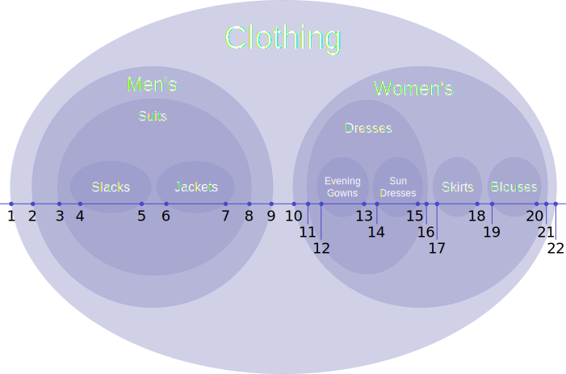{kind=link}
An example of a simple nested set.
11.6.10. Stepwise Regression
Stepwise regression is a method of regression modeling in which the choice of predictive variables is carried out by an automatic procedure.
Learning Objective
Evaluate and criticize stepwise regression approaches that automatically choose predictive variables.
Key Points
- Forward selection involves starting with no variables in the model, testing the addition of each variable using a chosen model comparison criterion, adding the variable (if any) that improves the model the most, and repeating this process until none improves the model.
- Backward elimination involves starting with all candidate variables, testing the deletion of each variable using a chosen model comparison criterion, deleting the variable that improves the model the most by being deleted, and repeating this process until no further improvement is possible.
- Bidirectional elimination is a combination of forward selection and backward elimination, testing at each step for variables to be included or excluded.
- One of the main issues with stepwise regression is that it searches a large space of possible models. Hence it is prone to overfitting the data.
Key Terms
- Bayesian information criterion
- a criterion for model selection among a finite set of models that is based, in part, on the likelihood function
- Akaike information criterion
- a measure of the relative quality of a statistical model, for a given set of data, that deals with the trade-off between the complexity of the model and the goodness of fit of the model
- Bonferroni point
- how significant the best spurious variable should be based on chance alone
Stepwise regression is a method of regression modeling in which the choice of predictive variables is carried out by an automatic procedure. Usually, this takes the form of a sequence of $F$ -tests; however, other techniques are possible, such as $t$ -tests, adjusted $R$ -square, Akaike information criterion, Bayesian information criterion, Mallows's $C_p$ , or false discovery rate. The frequent practice of fitting the final selected model, followed by reporting estimates and confidence intervals without adjusting them to take the model building process into account, has led to calls to stop using stepwise model building altogether -- or to at least make sure model uncertainty is correctly reflected.
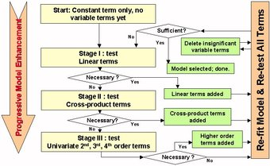{kind=link}
This is an example of stepwise regression from engineering, where necessity and sufficiency are usually determined by $F$ -tests.
Main Approaches
- Forward selection involves starting with no variables in the model, testing the addition of each variable using a chosen model comparison criterion, adding the variable (if any) that improves the model the most, and repeating this process until none improves the model.
- Backward elimination involves starting with all candidate variables, testing the deletion of each variable using a chosen model comparison criterion, deleting the variable (if any) that improves the model the most by being deleted, and repeating this process until no further improvement is possible.
- Bidirectional elimination, a combination of the above, tests at each step for variables to be included or excluded.
Another approach is to use an algorithm that provides an automatic procedure for statistical model selection in cases where there is a large number of potential explanatory variables and no underlying theory on which to base the model selection. This is a variation on forward selection, in which a new variable is added at each stage in the process, and a test is made to check if some variables can be deleted without appreciably increasing the residual sum of squares (RSS).
Selection Criterion
One of the main issues with stepwise regression is that it searches a large space of possible models. Hence it is prone to overfitting the data. In other words, stepwise regression will often fit much better in-sample than it does on new out-of-sample data. This problem can be mitigated if the criterion for adding (or deleting) a variable is stiff enough. The key line in the sand is at what can be thought of as the Bonferroni point: namely how significant the best spurious variable should be based on chance alone. Unfortunately, this means that many variables which actually carry signal will not be included.
Model Accuracy
A way to test for errors in models created by stepwise regression is to not rely on the model's $F$ -statistic, significance, or multiple-r, but instead assess the model against a set of data that was not used to create the model. This is often done by building a model based on a sample of the dataset available (e.g., 70%) and use the remaining 30% of the dataset to assess the accuracy of the model. Accuracy is often measured as the standard error between the predicted value and the actual value in the hold-out sample. This method is particularly valuable when data is collected in different settings.
Criticism
Stepwise regression procedures are used in data mining, but are controversial. Several points of criticism have been made:
- The tests themselves are biased, since they are based on the same data.
- When estimating the degrees of freedom, the number of the candidate independent variables from the best fit selected is smaller than the total number of final model variables, causing the fit to appear better than it is when adjusting the $r^2$ value for the number of degrees of freedom. It is important to consider how many degrees of freedom have been used in the entire model, not just count the number of independent variables in the resulting fit.
- Models that are created may be too-small than the real models in the data.
11.6.11. Checking the Model and Assumptions
There are a number of assumptions that must be made when using multiple regression models.
Learning Objective
Paraphrase the assumptions made by multiple regression models of linearity, homoscedasticity, normality, multicollinearity and sample size.
Key Points
- The assumptions made during multiple regression are similar to the assumptions that must be made during standard linear regression models.
- The data in a multiple regression scatterplot should be fairly linear.
- The different response variables should have the same variance in their errors, regardless of the values of the predictor variables (homoscedasticity).
- The residuals (predicted value minus the actual value) should follow a normal curve.
- Independent variables should not be overly correlated with one another (they should have a regression coefficient less than 0.7).
- There should be at least 10 to 20 times as many observations (cases, respondents) as there are independent variables.
Key Terms
- homoscedasticity
- A property of a set of random variables where each variable has the same finite variance.
- Multicollinearity
- Statistical phenomenon in which two or more predictor variables in a multiple regression model are highly correlated, meaning that one can be linearly predicted from the others with a non-trivial degree of accuracy.
When working with multiple regression models, a number of assumptions must be made. These assumptions are similar to those of standard linear regression models. The following are the major assumptions with regard to multiple regression models:
- Linearity. When looking at a scatterplot of data, it is important to check for linearity between the dependent and independent variables. If the data does not appear as linear, but rather in a curve, it may be necessary to transform the data or use a different method of analysis. Fortunately, slight deviations from linearity will not greatly affect a multiple regression model.
- Constant variance (aka homoscedasticity). Different response variables have the same variance in their errors, regardless of the values of the predictor variables. In practice, this assumption is invalid (i.e., the errors are heteroscedastic) if the response variables can vary over a wide scale. In order to determine for heterogeneous error variance, or when a pattern of residuals violates model assumptions of homoscedasticity (error is equally variable around the 'best-fitting line' for all points of x), it is prudent to look for a "fanning effect" between residual error and predicted values. That is, there will be a systematic change in the absolute or squared residuals when plotted against the predicting outcome. Error will not be evenly distributed across the regression line. Heteroscedasticity will result in the averaging over of distinguishable variances around the points to yield a single variance (inaccurately representing all the variances of the line). In effect, residuals appear clustered and spread apart on their predicted plots for larger and smaller values for points along the linear regression line; the mean squared error for the model will be incorrect.
- Normality. The residuals (predicted value minus the actual value) should follow a normal curve. Once again, this need not be exact, but it is a good idea to check for this using either a histogram or a normal probability plot.
- Multicollinearity. Independent variables should not be overly correlated with one another (they should have a regression coefficient less than 0.7).
- Sample size. Most experts recommend that there should be at least 10 to 20 times as many observations (cases, respondents) as there are independent variables, otherwise the estimates of the regression line are probably unstable and unlikely to replicate if the study is repeated.

Random data points and their linear regression.
11.6.12. Some Pitfalls: Estimability, Multicollinearity, and Extrapolation
Some problems with multiple regression include multicollinearity, variable selection, and improper extrapolation assumptions.
Learning Objective
Examine how the improper choice of explanatory variables, the presence of multicollinearity between variables, and extrapolation of poor quality can negatively effect the results of a multiple linear regression.
Key Points
- Multicollinearity between explanatory variables should always be checked using variance inflation factors and/or matrix correlation plots.
- Despite the fact that automated stepwise procedures for fitting multiple regression were discredited years ago, they are still widely used and continue to produce overfitted models containing various spurious variables.
- A key issue seldom considered in depth is that of choice of explanatory variables (i.e., if the data does not exist, it might be better to actually gather some).
- Typically, the quality of a particular method of extrapolation is limited by the assumptions about the regression function made by the method.
Key Terms
- Multicollinearity
- a phenomenon in which two or more predictor variables in a multiple regression model are highly correlated, so that the coefficient estimates may change erratically in response to small changes in the model or data
- spurious variable
- a mathematical relationship in which two events or variables have no direct causal connection, yet it may be wrongly inferred that they do, due to either coincidence or the presence of a certain third, unseen factor (referred to as a "confounding factor" or "lurking variable")
- collinearity
- the condition of lying in the same straight line
Until recently, any review of literature on multiple linear regression would tend to focus on inadequate checking of diagnostics because, for years, linear regression was used inappropriately for data that were really not suitable for it. The advent of generalized linear modelling has reduced such inappropriate use.
A key issue seldom considered in depth is that of choice of explanatory variables. There are several examples of fairly silly proxy variables in research - for example, using habitat variables to "describe" badger densities. Sometimes, if the data does not exist, it might be better to actually gather some - in the badger case, number of road kills would have been a much better measure. In a study on factors affecting unfriendliness/aggression in pet dogs, the fact that their chosen explanatory variables explained a mere 7% of the variability should have prompted the authors to consider other variables, such as the behavioral characteristics of the owners.
In addition, multicollinearity between explanatory variables should always be checked using variance inflation factors and/or matrix correlation plots . Although it may not be a problem if one is (genuinely) only interested in a predictive equation, it is crucial if one is trying to understand mechanisms. Independence of observations is another very important assumption. While it is true that non-independence can now be modeled using a random factor in a mixed effects model, it still cannot be ignored.
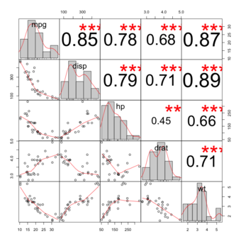{kind=link}
This figure shows a very nice scatterplot matrix, with histograms, kernel density overlays, absolute correlations, and significance asterisks (0.05, 0.01, 0.001).
Perhaps the most important issue to consider is that of variable selection and model simplification. Despite the fact that automated stepwise procedures for fitting multiple regression were discredited years ago, they are still widely used and continue to produce overfitted models containing various spurious variables. As with collinearity, this is less important if one is only interested in a predictive model - but even when researchers say they are only interested in prediction, we find they are usually just as interested in the relative importance of the different explanatory variables.
Quality of Extrapolation
Typically, the quality of a particular method of extrapolation is limited by the assumptions about the regression function made by the method. If the method assumes the data are smooth, then a non-smooth regression function will be poorly extrapolated.
Even for proper assumptions about the function, the extrapolation can diverge strongly from the regression function. This divergence is a specific property of extrapolation methods and is only circumvented when the functional forms assumed by the extrapolation method (inadvertently or intentionally due to additional information) accurately represent the nature of the function being extrapolated.